plot(density(rnorm(100),bw=5)) #These functions will be explained below
Learn Statistics in Depth and on an Accelerated Timeline
Optional: Download this document to run locally
(not a comprehensive list)
Simulating Data
Defining Measures of Central Tendency from scratch
Making Sampling Distributions from scratch
Defining, Deriving, and using Standard error
Making Confidence Intervals from scratch
Making a t-test from scratch
Introduction to Cross-Validation
Everyone, really. I’ve aimed to write this so that if you know nothing at all about statistics the material should be easy to follow. Additionally, the material covers coding, computations in R, and general computing. So, even if you know a lot about statistics already, there is a lot here for you too. In fact, I would argue that most researchers do not know the derivations nor how to construct the tools covered in these first lessons.
It is a free resource that is intended to help you build a mental framework for statistical analyses. In particular, the emphasis is on demonstrations of derivations, building statistical tools, and verbalizing much of the underlying logic, rationale, and intuitions that are typically implied but not stated in statistical training.
Most people have experienced the frustration that comes when an author presents a simple concept on one page and then uses the concept in a completely different manner on the next page (e.g., mathematics textbooks). Most often, the author is correct and the use of the concept is appropriate. However, there can be a lot of missing context that may be obvious to the author but is not necessarily obvious to the learner. Statistics is no different. In fact, it can be much worse due to the initial high barrier to entry. Even the most basic statistical analysis will require understanding and juggling multiple concepts that are most often, not completely taught. Furthermore, the growth in complexity from one concept to the next ultimately compounds the error in understanding of later concepts.
To avoid such issues, instead of focusing purely on theoretical abstractions, this resource intends to interweave a comprehensive dialogue with concrete demonstration. The demonstrations are the secret sauce. They aim to provide a means for the learner to access the theoretical abstractions that might otherwise take a very long time to digest or build intuitions of. The reality is simple: you don’t have the time to think it all out.
Additionally, throughout the writing there are comprehensive explanations and sidenotes that you will be unlikely to find elsewhere, certainly not in one location. In fact, much of the material is completely absent in textbooks and popular courses. Yet, the material in these sections can greatly facilitate both your understanding and your practical data analysis skills. Likewise, there will be additional .R files that extend the material to demonstrate important ideas, to help build important intuitions, and to serve as an foundation upon which more complex analyses or simulations may be built.
Statistical literacy is empowering. As a social scientist, I have deliberately exposed myself to a broad spectra of viewpoints and manners of thinking so that I am more capable of thinking about the behavior and psychological phenomena that structure our daily lives. From this experience, my opinion is that we generally do not teach skills for formal problem solving. This leave most people without a means to meaningfully evaluate truth claims outside of their intuitions. While relying on personal intuition is better than nothing, any one of us can be manipulated using our own personal biases and ignorance. Furthermore, both science and society today are highly complex machines that are increasing in complexity constantly. Although intuition still has value, it is a much less reliable method for evaluating truth claims in the present context than it may have been in the past. Consequently, the easiest person to fool is yourself when you rely purely on intuition. At the very least, statistical literacy offers a means to augment intuitions so that people can more readily question the validity of their own thoughts.
I also wrote this because when I started studying statistics the explanations about statistical tools given to me were sometimes vague or incomplete. I’m a meticulous learner and I found it to be very distracting and frustrating. In my mind, half-answered and unanswered questions accumulate like sticky notes on a computer monitor. They can be a kind of clutter or mental baggage. But, in the context of argumentation and evaluating truth claims, they are a measure of the strength of the argument, demonstrating how fragile it can be. As a scientist, I don’t want to rest important claims on flimsy evidence.
As a basic example of the types of consideration covered in this material, the early content will work a lot with the formula for standard deviation. The formula requires that we take the square of differences before averaging and square rooting. However, we could just as easily, in fact much more easily, take the average of the absolute values. Doing so would eliminate both the squaring and the square root operations, which are known to introduce a bias. Yet, many researchers have no idea why we choose to take the square anyway. In fact, most researchers do not even view it as a choice to be made. …And that matters. Basic intuition tells us that the formula with fewer steps is going to tend to be computed with fewer errors (especially when done by hand).
Sidenote: Why is Standard Deviation ‘standard’?
The original name for standard deviation was ‘root mean squared deviation.’ It was kind of a mouthful. Karl Pearson, an icon in the history of statistics, started referring to it as standard deviation in the 1890s and the name basically just stuck. The word ‘standard,’ then is really just a reference to the fact that it was used commonly or typically as opposed to other measures of deviation.
As it turns out, computing average deviation with absolute values is much more efficient in some cases (See: Revisiting a 90-year-old debate: the advantages of the mean deviation, For an analysis informed by computer simulation, see: sd vs md.R . The word ‘efficient’ has a technical meaning here. In this case, it means something like ‘if we desire X amount of precision, then average deviation with squaring will require more samples to achieve that precision than would average deviation using absolute values without squaring.’
That said, the squaring operation affords a number of benefits. For example, the formula based on squaring is differentiable, which allows for an analytical approach to solving some problems rather than using numerical approximations. For example, Ordinary Least Squares regression can be solved analytically (i.e., in a single pass) vs Least Absolute Deviation regression which is solved numerically (i.e., an initial solution is made and then sequentially updated in multiple steps).
We’ve learned in the past 2 decades that many proposed explanations in the social sciences are wrong or at least certainly not as robust as originally portrayed. We’re also seeing how the social sciences have also suffered a tremendous blow to credibility. It could be argued that this has had negative externalities for society writ-large. For example, would ‘pop psychology’ and a lot of the ‘woo woo wellness’ fads have such large followings if it was easier for the typical person to appreciate the difference between credible expertise and the alternative. In my mind, these issues are linked. Some researchers will debate the existence or importance of the link between statistical conventions and the credibility of social science but few will debate that the two issues exist. If you have not heard of it, the so-called ‘replication crisis’ is widely recognized as real (See: “Editors’ Introduction to the Special Section on Replicability in Psychological Science: A Crisis of Confidence?” and “False-positive psychology: undisclosed flexibility in data collection and analysis allows presenting anything as significant.”). One way to contextualize the replication crisis as a phenomena, is as the slow acceptance or realization that many claims made about psychological processes in peer reviewed studies are false or problematic. For example, there are more than 200 different ways to measure depression. As a species, we’ve invested 10s of billions of dollars into the study of depression. However, among those 200+ assessment approaches,there is surprisingly poor overlap and it’s not clear that we’ve made significant progress resolving this problem. And it is a problem. The World Health Organization in its report on Depression and Other Common Mental Disorders estimates that there is more depression today than there are people with cardiac health problems.
Some other examples of classical studies and their problems. The Stanley Milgram studies. Most of us are aware of 1 study. But in fact, there were at least 18 variations that were explored. The 1 study that was popularized, and was the most taught until recently, is the most extreme variation. (See: Gina Perry and the book “Behind the Shock Machine: The Untold Story of the Notorious Milgram Psychology Experiments”).
What about the Zimbardo Stanford Prison study? See: The lifespan of a lie by Ben Blum
Okay, but those examples are more issues of experimental design… what about statistical issues? They do have statistical issues. In both of these cases, the researchers would have you believe that the results say something important about human psychology IN GENERAL. They don’t, at least, not the claim made by the researchers anyway.
Another more recent example, which pertains more to the mechanics of statistical analysis: Power posing. Ted talk
If you’re not aware of the issue, the gist as I understand it is as such: Exciting claims were made about the impact of standing with a specific posture on mental/physical processes. Upon further review, those claims are now known to be, at best, referring to something that is not true in the way that it was presented. For example, later replications with more tightly controlled statistical analysis found the effects to be smaller than originally reported.
SO, the evidence is far less clear and far less compelling than the original reports would have you believe.
In fact, some researchers argue that the statistical evidence for power posing is so weak that even if the effect exists, the existing published record is still more consistent with what we would expect to find when no effect exists than it is consistent with what would expect to find when an effect does exist. (See: Simmons and Simmonsohn (2017) “Power Posing: P-Curving the Evidence”) However, the researchers behind power posing were not bad faith actors. In fact, their approach was well within the practices of psychological researchers at the time. Around the same time as the power posing work, separate groups of researchers had begun to investigate data analysis norms. The investigations revealed that as much as 70% of psychologists would regularly do things such as continue to collect new data until their results reached a level deemed statistically significant (see: Measuring the Prevalence of Questionable Research Practices With Incentives for Truth Telling). That practice is a huge problem. Its like betting on a coin to be heads over tails. If you don’t get heads the first time you move the goal posts and ask to do 2 out 3… or 3/5…4/7, etc. Eventually you will see at least 1 heads result.
Given the above, it is probably safe to assume there are thousands of papers spanning thousands of research questions with these types of problems in the published record. (See: One of the original articles leading in to the replication crisis article by John Ioannidis, Why Most Published Research Findings Are False and by Joseph Simmons, False-positive psychology: undisclosed flexibility in data collection and analysis allows presenting anything as significant.)
While there are many causes, in my experience, the record points consistently to at least one issue:
A cavalier attitude about statistics.
Since my first statistics class I’ve taken a statistics course most years for at least 9 years now. And, I’ve covered even more content in the course of my own research. With every lesson, what I have learned is that statistics is ALL about choices and the consequences of those choices. So, it’s very important to be an intentional decision-maker, because when people are asleep at the wheel issues crop up. Every day, I see the issues with greater clarity. In sum, I don’t feel the social sciences have been serious enough about their statistical literacy (though that has been changing in recent history). And that’s a problem for everyone for at least 2 reasons.
1. Scientists inform public policy
For example, Jonathan Haidt recently provided testimony to the U.S. Congress on what he believes is a link between social media use and well-being in teenagers. He’s not alone in this position but he is easily among the most prominent figures. In addition to other suggestions, he advocates for legislation that would, in effect, require social media companies to prevent teenagers (I think 16 and younger) from being allowed on their platforms without parental consent. Is this the best course of action? I don’t know. Is he right? I don’t know. I would argue that, in fact, nobody knows. To be clear, he also wants scientists to have greater access to data from teenagers who are currently on social media platforms. Nevertheless, teasing apart any potential impact of social media use on well-being is a complex statistical problem. Even if one were to have access to most of the relevant data, a poor analysis could have far reaching consequences that ultimately don’t help. Is it that using social media makes us unwell? If so, then why do some people enjoy it? Or is it the case that people who are already unwell, tend to use social media more often? Or what if there is some other factor… perhaps there is some other factor which makes a person susceptible to becoming unwell when they use social media? If so, then the association between social media and well-being is induced by that third thing, in this case the vulnerabilities associated with being a developing teenager. Even assuming that a study has collected all of these types of data (they rarely can. Usually a study focuses on 1 source), what would the statistical model look like? It would be far more complex than what the current published works have relied upon. And what about the proposed solutions here. Do we actually know that limiting access will results purely in benefits? Like most issues, it’s probably a mixture of benefits and risks. So the question is whether those potential benefits would outweigh the loss of experiences that would otherwise happen. In any case, these are just some of the largely unanswered questions that are either poorly pursued statistically, or remain completely unaddressed. Yet, we do have problems and we do have to make important decisions about them.
2. Statistical literacy is empowering
Both science and society are highly complex machines. While relying on personal intuition is better than nothing, any one of us can be manipulated using own personal biases and ignorance. Furthermore, the easiest person to fool is yourself. (yes, I repeated that)
So, there are many reasons why I would want to write something like this and why it could be a really useful tool for basically anyone. Let’s begin.
Populations: We want to learn about populations.
We begin with understanding our primary goals. In particular, one of the most common goals of research is to be able to make meaningful statements about populations.
A population could be all of the people who will ever exist, or it could be defined to be some other group such as all of the people at the university. It could also be objects such as all of the homes in a city.
Critically, while we may be able to think about a relevant population, we’re almost never able to measure every single member of the population. It is often too expensive and time consuming or simply impossible. For example, the population could be growing or shrinking. Thus, we have a need for statistical inference. In other words, if we could measure the whole population, then we could just use descriptive summaries.
So, to answer our questions about the population, we carefully draw members from it and use those members collectively as a sample to ultimately make our statements about the population using statistical inference. In particular, we aim to draw the members randomly. Most commonly used statistics rest upon the assumption of a randomly selected sample. Non-random sampling runs the risk of differences, or the lack thereof, being caused by our sampling procedure. In turn, you could reject the ‘null hypothesis’ or not for reasons that are unrelated to what you’re trying to study.
Additionally, tools of statistical inferences (e.g., two-sample t-tests) will only be able to provide evidence about whether or not there are patterns of non-randomness in the data. They cannot tell us what the causes of the non-randomness are. The evidence about the causes derives holistically from how we conducted the study.
Until very recent history, to learn statistical concepts you would have to do a tremendous amount of reading and thinking because the computations even for very simple problems will often be so great that it would take very long periods of time to execute them. Moreover, many of the concepts we need to conduct statistical inference rely upon understanding the behavior of our tools when applied repeatedly. These conditions posed an extremely high barrier to entry for even the most capable researchers. In some sense, this explains why statistical literacy is still so poor, even among experts, today; you have to be an expert in at least two fields to do anything well.
That said, with modern computers, the game has changed. With modern computers we can execute, literally, trillions of computations per second.
Furthermore, whereas we typically don’t have access to a population when doing research, with computers we can sometimes get access to a population by creating one. In turn, we can also randomly sample from it, or use some other non-random sampling procedure to observe the consequences.
This is wonderful because it then means we’re able to directly evaluate what our statistical tools do and rapidly build accurate intuitions. With our access to the population we create, we can study the properties or ‘behavior’ of the statistical tools we would typically rely upon. This greatly reduces the conceptual burdens and decreases the amount of time investment one would need to make to become proficient in the application of these tools.
Sidenote: The trajectory of human knowledge.
It’s also worth pointing out that ALL of the statistical tools covered in here were discovered in very recent history and by researchers who did not have computers. In the long arc of human history, these tools are still very new; most are younger than 150 years old, probably all younger than 300. Researchers relied upon an emerging understanding of mathematics and philosophy to create and navigate an abstract system for learning from limited information. SO, IF discovery were a race, we’ve barely left the starting gate. And that means, yes, you are among the first group of people to ever learn this stuff. Also, it is basic. But basic doesn’t mean unimportant. It means something more like ‘foundational’ or fundamental. These are some of the basic building blocks so to speak.
To keep things as simple as possible we’ll use what’s called the ‘normal’ distribution to define our population. The normal distribution has a characteristic bell shape as shown in the plot below.
plot(density(rnorm(100),bw=5)) #These functions will be explained below
Sidenote:Why the normal distribution?
The normal distribution shows up a lot throughout classical statistics for several reasons. It is often said that the normal distribution ‘shows up everywhere’ but this is a kind of half-truth. There are several reasons. Amongst them, one important reason is that it is far easier to develop methods for analysis that rely on the normal distribution than for other distributions. Put differently, when using the normal distribution it is easier to prove a theorem is true and the math is easier (tractable).
We will define our population as a set of 1 million members.
N=1000000We will pretend that we have measured something of interest about those members. In real life, that ‘something of interest’ could be almost anything. (e.g., height, weight, intellectual ability, movie preferences or movie ratings, how much they like pizza, etc.)
Next, we need a measurement. To keep things simple, we’ll use the mean. The mean shows up over and over again in statistics for many reasons. One reason is that each sample member contributes unique information to a sample mean. However, it’s important to be aware that we’re making a deliberate choice when we choose to use the mean.The mean is just one measure of central tendency (i.e., one measure which aims to describe the central mass of the data). Another measure that is widely known is the median. The median is sometimes used. It is only affected by the percentile ranks of observations and the mode is affect only by the frequency of unique values across the sample members.
To build an intuition for why we use the mean, we’ll simulate some random numbers here and compare how the mean, median, and mode (i.e., the number which occurs most frequently) of the set relate to each other as prediction rules. That is, we’ll use the mean, median, or mode of the set to predict each of the members in the set and we’ll rank them by the amount of error.
dist <- sample(1:6,300,replace = T) #This function simulates 300 rolls of a game die. More technically, it samples 300 points randomly from a uniform distribution of values 1,2,3,4,5 or 6, just like a game die. In a uniform distribution, each point has the same probability of appearing. So here we should have *approximately* equal counts of each value. table(dist)
dist.mean <- mean(dist)
dist.median <- median(dist)
dist.mode <- as.numeric(names(table(dist)[table(dist)==max(table(dist))][1])) #R does not have a base (i.e., built-in) function for computing the mode. This function tabulates each value and reports the first value that appears most frequently. Technically, you can have more than 1 mode. But we'll just arbitrarily pick the first.
cat(
paste("Mean:",dist.mean),
paste("Median:",dist.median),
paste("Mode:",dist.mode),
sep = "\n")Mean: 3.63333333333333
Median: 4
Mode: 3We compute the sum of the squared values of each member of dist predicted by the mean of dist. This makes sense since a perfect prediction would have 0 error. So our metric captures a useful definition of ‘error’. Notice that I wrote ‘useful.’ If we were to use the absolute values of each member (e.g., sum(abs(dist-dist.mean)) ), the mean would often be worse than the median and sometimes worse than the mode.
cat(
paste( 'Error for Mean:', sum((dist-dist.mean)^2)),
paste('Error for Median:',sum((dist-dist.median)^2)),
paste('Error for Mode:',sum((dist-dist.mode)^2)),
sep = "\n")Error for Mean: 843.666666666667
Error for Median: 884
Error for Mode: 964For completeness, let’s also make a visualization of these errors. Instead of defining the measure of central tendency, the code below will test every value between the smallest and largest value in our ‘dist’ object.
#The line below says, compute the error for each 'value' in the set. Start with the smallest (i.e., min(dist)), then for each iteration add .01. Continue through the largest value (i.e., max(dist))
result <- sapply(seq(min(dist),max(dist),.01),function(value){
sum((dist-value)^2)
} )
#The line below will plot the results
plot(min(dist)+.01*c(1:length(result)),result, main= "Distribution of Errors \n for each tested value",xlab="Tested Values", ylab = "The amount of error")#The line below will report the smallest error found and at what value.
print(paste("Minimium of", min(result), "found at value of:", min(dist)+.01*c(1:length(result))[which(result==min(result))]))[1] "Minimium of 843.669999999997 found at value of: 3.64"rm(dist,dist.mean,dist.median,dist.mode) #rm() will remove/delete whatever you put in the parenthesis to free up memory.We can see in the simulation above the set of possible errors we can obtain from picking different values as our measure of central tendency. The errors form a nice U-shape pattern and the lowest point on this U-shape occurs at, or extremely close to, the mean.
For the sake of simplicity, the average (another word for mean) of all measurements is going to be defined as 10.
population.mean=10Since it is not the case that all members typically have the ‘mean amount’ of the thing we measure, we also need to define how much the measurements spread. For that, we’ll use something called Standard Deviation. We will use Standard Deviation as a method for ascertaining the average distance each measurement is away from the average computed from the set of measurements. There are very good reasons for this (see: sd vs md.R) Though it will not be equivalent to the mean of the absolute value of deviations, the two are going to be highly correlated with one another. For example, the set of numbers (1,5,9) has an average of 5 and average distance of 4. In our simulation, we’ll set the standard deviation to also be 10.
population.standard.deviation <- 10 Sidenote: Floating Point error.
Computers represent numbers in binary. Operations (i.e., addition, multiplicaton, etc) will very often not be exact due to what’s called floating point error. Essentially, in binary, numbers are represented by an expression with a fixed length. By default in R, every number utilizes what’s called Double-precision. Double-precision means each number is represented by 64 bits of binary code.
However, many numbers are irrational, such as 1/3. To deal with these limitations the numbers are rounded off on the tail end. In doing so, arithmetic operations can accumulate small errors. As an example, consider 1/3. It is irrational. So, R will round this irrational number. Instead of being 0.333… it rounds to the nearest number in the 64 bit representation, which is the value shown below.
sprintf("%.25f", (1/3))[1] "0.3333333333333333148296163"You can increase or decrease the precision (e.g., R package called ‘Rmpfr’). However, increasing the precision also increases the computational and memory costs and for almost all applications will provide you with no practical benefit. In fact, in the case of training Neural Networks, single precision accuracy can sometimes lead to better models by forcing the algorithm to learn how to deal with noisier data.
Sidenote: Operators
In R there ‘<<-’ and ‘<-’ operators. The ‘<<-’ is an assignment operator similar to ‘<-’ , but it assigns a value to a variable in the global environment, even if the assignment occurs within a function. This is called a “superassignment” or “global assignment”.
For example, consider the following code:
x <- 1 #x is created in the 'global' environment. myfunction <- function() { #This is the basic syntax for creating a function. x <- 2 # but this x is created within the function. y <<- 3 # this y is assigned to the global environment. print(x) print(y) } #closes the function. myfunction()[1] 2 [1] 3print(x)[1] 1Notice how the x above refers back to the first line, and was not overwritten by the function.
print(y)[1] 3Notice how this y was not created outside of the ‘myfunction()’ call but is now accessible in the global environment.
rm(x,y,myfunction)
Lastly, we make our population. We’ll start with the function rnorm. This function randomly samples a specified number of datapoints (in this case 1 million) from a normal distribution with the defined parameters.
Sidenote: Why distributions?
A distribution is just a way of defining a function that relates a set of objects. For example, the function that defines the normal distribution is: (1 / (sigma * sqrt(2 * pi))) * exp(-((x - mu)^2 / (2 * sigma^2))), sigma=standard deviation, pi as in 3.14…, mu = the mean. The idea here is that data are generated by a process in the real world. For example, if you measure the speed of cars selected at random on a regulated roadway you will get a distribution. By selecting at random, we can know that the only relevant factor is that each driver is trying to drive at the posted speed limit. However, not all drivers will be able to drive exactly at the limit. Some will tend to be a little over and others will be a little under. If all drivers are earnestly trying to drive exactly at the posted limit, then all of the other differences between the drivers will be due to random causes. If there are a lot of random causes, the distribution might span a relatively wide range and if there are few random causes, the distribution might span a relatively narrow range. So, collectively the speed measurements would form a distribution because all the measurements were derived from the same process underlying process (i.e., trying to drive the posted limit).
population <- rnorm(n=N,mean=population.mean,sd=population.standard.deviation)Sidenote: rnorm
To see how functions like rnorm are constructed have a look at: Rnorm from scratch.R
Sidenote: R help
You can read more about rnorm and any other function in R by using ‘?’ to call the help page. For example, the command ?rnorm will bring up the rnorm help page. Alternatively, if you want to see what a function is composed of explicitly you can run the command without parenthesis (i.e., use rnorm not rnorm()). Keep in mind that some function are written in C. C code is compiled which means it has already been translated into a format that your machine can read (and you can’t). In those cases the function will not show much information when run without parenthesis and if you wanted to explore the function you’d have to download R (or the package), then unzip or untar it (don’t install again). Then open the folder directly, go to src/main/ and C files will be there. Fair warning, if you don’t know C, you’ll get lost quickly. However, a chatbot can help with navigating and interpreting what you find.
Since the datapoints are sampled with a random process, their mean and standard deviation will not be exactly the values we desire. The rnorm function only promises that ‘with an infinitely large sample’ the parameters will be exactly as specified. So we’ll want to adjust. mean(population) #will be not exactly = to 10 sd(population) #will be not exactly = to 10
To get exact values of 10 and 10 we’ll use basic arithmetic.
In the context of a set of measurements, subtraction and addition are arithmetic operations that can move datapoints along a number line without affecting the relative distances from one another. e.g., 1 and 3 are 3-1=2 distance. Adding 5 to 1 and to 3 yields 6 and 8. But their distance is the same 8-6=2. #In the context of a set of measurements, multiplication and division stretch and shrink the distances between datapoints. Again with 1 and 3. Multiply by 2 and we get 2 and 6. 6-2=4. 4 is related to the original distance by being 2x what it was previously. Division works the same way but in reverse.
So, first, we’ll subtract the mean from every datapoint. This is called ‘centering’. By subtracting the mean from all datapoints we are, in a sense, “removing” the mean. So the result is a new mean of 0. Next, we’ll divide every datapoint by the standard deviation. This is called ‘scaling’. By dividing every datapoint by the standard deviation, we are shrinking the distance of every datapoint from the mean. However, the new average distance is not a 0. The new average distance from the mean will be 1. # {#why-1-basic-algebra} Why 1? Basic algebra.The original standard deviation is fundamentally just an average. Every number is added together and then divided by the number of numbers in the set. But, we’ve divided every number by the same standard deviation. So if we’ve written every number as a fraction, we can just compute the standard deviation using the numerators alone first. But if we do that, we’ll get back the original standard deviation in the numerator…which means we’ll have the standard deviation of the set in the numerator and we’ll be dividing it by the standard deviation of the set in the denominator.
A quick example.
a <- c(1:10) # a set of 10 integers from 1 through 10.A formula for standard deviation in words: first square the difference between each member of ‘a’ with the mean of ‘a’. Then compute the sum of these squared values. Then divide by the number of members minus 1 (i.e., 10-1). Finally, take the square root.
sqrt(sum((a-mean(a))^2)/(length(a)-1)) [1] 3.02765sd(a) #The easier way with a built-in function. The standard deviation of the set.[1] 3.02765a/sd(a) #The 'scaled' members of 'a'. [1] 0.3302891 0.6605783 0.9908674 1.3211565 1.6514456 1.9817348 2.3120239
[8] 2.6423130 2.9726022 3.3028913Sidenote: on == and all.equal.numeric().
In R, == is an operator testing for the equality of the objects to the left and the right. It is very strict. So, when computations result in floating point rounding error, == will return FALSE. An effective alternative is to use a slighly less strict comparison method, namely all.equal.numeric(). The next codeblock demonstrates the differences. what I mean. The sprintf(“%.15f”,…) tells R to print the results out to 15 decimal places.
x <- 1/49 x*49==1[1] FALSEall.equal.numeric(x*49,1,tol=.01) #tol is for tolerance. It specifies by how the two values can be different but still treated as being equal.[1] TRUE
mean(a/sd(a)) == mean(a)/sd(a) #Returns: TRUE[1] TRUESo, the mean of “scaled ‘a’” is equal to the mean of ‘a’ divided by the standard deviation of ‘a’.
Likewise:
sd(a)/sd(a) == sd(a/sd(a)) #Returns: TRUE.[1] TRUEAgain, when we compute standard deviation, we’re just computing a mean. Since all denominators are the same, we can rearrange the equations in this way.
Sidenote: Temperature Convesion.
Another reason the standard deviation becomes 1 when we divide by standard deviation is because we have changed the scale. This is directly analogous to temperature measurement.
The boiling point of water in Farenheight is 212 degrees but in Celsius it is 100 degrees. And, Freezing point in Farenheight is 32 degrees but in Celsius it is NOT 100-(212-32)= -80 degrees. Rather, in Celsius freezing point is 0.
So a 1 unit change on Celsius is not equal to a 1 unit change in Farenheight. It is actually equal to a rate (100-0)/(212-32). When simplified, a 1 degree change in Celsius equals 1.8 degrees change in Farenheight. So, starting with Farenheight and getting to Celsius we first subtract 32 and then divided by 1.8 (i.e., multiply by 1/1.8 which is equal to the 5/9 you’ll see if you google this)
When we both center and scale a distribution, we call it ‘normalizing’ or ‘standardizing’ because the resultant distribution will always have a mean of 0 and a standard deviation of 1, which happen to also be the values of the parameters for the Standard Normal Distribution.
The sample member values are referred to as ‘z-scores’. It’s a very useful tool, and that’s why in R there is a function dedicated to it, called ‘scale’
population <- scale(population)
mean(population) #Remember: floating point error exists[1] -1.23652e-14sd(population) #Returns 1 or approximately. 1.[1] 1Finally, we use the same inverse arithmetic to obtain our desired population values. That is, we expand the scale to the desired scale and then add back in our desired mean.
population <- population.standard.deviation*population+population.meanWe can prove that the population contains 1 million samples and that the mean and standard deviation of all the measurements are both 10
cat(
paste("Population size:", length(population)),
paste("Population mean:", mean(population), "#Reminder: floating point error exists"),
paste("Population standard deviation:", sd(population)),
sep = "\n")Population size: 1000000
Population mean: 9.99999999999988 #Reminder: floating point error exists
Population standard deviation: 10We have our population.
Now, to simulate the real world, we construct a sample by drawing members from this population.
Let’s draw 100 members from the population at random. Collectively, the resultant set is called a sample.
We’ll use the function ‘sample’ to select the members. We could use other methods but ‘sample’ is useful because it attempts to select members randomly. The function utilizes a selection mechanism based on the clock your computer uses. Since measurements of the clock are updated on the timescale of milliseconds or less, ‘sample’ will have an intuitive appearance of randomness. It is not truly random (i.e., in the sense suggested by quantum computing), but it is sufficient for the purposes of this material (see also: Common defects in initialization of pseudorandom number generators)
The sample will have 100 members.
n=100 #Our sample size.
data <- sample(population,size=n)Okay, we have our sample, which we called ‘data’
What’s the mean and standard deviation of ‘data’?
s.mean <- paste("Sample mean:", mean(data))
s.sd <- paste("Sample Standard Deviation:",sd(data)*(99/n)) #by default 'sd()' divided by n-1 (discussed later)
cat(paste(s.mean,s.sd,sep="\n"))Sample mean: 10.408308428129
Sample Standard Deviation: 9.17849352220367Were both values 10? That’s extremely unlikely to be the case.
What if we repeat the sampling process?
data <- sample(population,size=n)
cat(
paste("Sample mean:",mean(data)),
paste("Sample Standard Deviation:",sd(data)*(99/n)),
sep = "\n")Sample mean: 8.95791106324763
Sample Standard Deviation: 10.5382204897279Still not 10s…why though? The reason why these estimates are not equal to the population values we defined is because of random sampling variability. Put simply, we do not have control over what members from the population will be included in our sample. In fact, as we’ll see below, the accuracy of our statistical inference will depend on us not having control.
Sidenote: The evidentiary value of an anecdote.
Our sample above was comprised of 100 members. Even with 100 members, we could not perfectly estimate the mean of our population. If we imagine that each member of our sample was a different person, we can draw a clear parallel to the information conveyed in anecdotes.Anecdotes are accounts derived from personal experiences that are often used to support arguments or claims. In the course of everyday life, prior personal experiences are a necessary and effective heuristic for guiding one’s behaviors in realtime that might be used as anecdotal evidence. However, the value of anecdotes is highest within the specific social and cultural context from which they are formualted and their value drops off steeply outside of those conditions. That is, the ability of a specific anecdote to carry general information is strongly limited. Therefore, in the context of statistical inference, where we aim to maximize the generalizbility of our statements to describe populations, anecdotes have very low evidentiary value. Individual experiences are just far too variable.
The notion of random sampling variability helps to explain why this is the case. When we collect data from a sample, we expect some degree of variation due to chance. This variation can make it difficult to draw reliable conclusions based on a single anecdote or even a small collection of anecdotes. Without a representative sample that accounts for this variation, we cannot make valid claims about the broader population. Thus, while anecdotes can be interesting and engaging, they should not be relied upon as the sole evidence for a claim.
As an example, let’s say you’re trying to determine the popularity of a new restaurant in your city. You ask 2 people what they think of the restaurant. Out of those 2 people, 1 raves about the amazing food and the other person bemoans a horrid experience. If you were to rely solely on these 2 anecdotes, the most accurate conclusion you can draw is that the restaurant could be good or bad. In other words, you gain almost no information that you can readily harness in determining the likely popularity of the restaurant. Even worse, if you tried to split the difference by saying that the food must be good but the service might be poor, you’d run in to even worse accuracy. You’d be estimating two things with half as much information each. So, either set of conclusions would be premature because of the effects of random variability inherent in any sample.
To belabor the point a bit, it’s possible that the two people you spoke to were not representative of the broader population. Random factors, such as the time of day the person visits the restaurant, might sufficiently influence either person’s account. For example, the positive review could have been based on the fact that the person was starving before their visit while the negative review could have been associated with a generally bad day the other person was having. However,if you were to survey a larger and more diverse group of people, you might get a different result as each of these random factors would not apply to every person you survey.
To draw more reliable conclusions about the popularity of the restaurant based on a collection of anecdotes, you would need to collect a potentially very large number accounts. In particular, the number of accounts you would want to collect should be proportional to the number of random factors that might influence an account. For example, some experiences are almost universally disliked (e.g., almost nobody enjoys getting a flat tire). If that is the nature of the question you are investigating, fewer overall accounts could be very informative. However, the tradeoff is that the more obvious the answer to a question is likely to be, the less of a need there is to investigate the question in the first place. In other words, the questions we end up investigating or debating are those that are inherently more difficult.
What if we repeat the process a lot of times?
We can do that with a ‘for’ loop.
saved.means <- c() #First, create a place to save all the sample means
saved.sds <- c() #Also, create a place to save all the standard deviations
for(repetition in 1:100){ # Read as this: "For repetitions 1 to 100, do the following"
data <- sample(population,size=n) #create a new sample of size n
saved.means <- c(saved.means,mean(data)) #Compute the mean of the sample and append it to the end of the object 'saved.means'
saved.sds <- c(saved.sds, sd(data)*(99/n)) #Compute the sd of the sample and append it to the end of the object 'saved.sds'
} #This closes the 'for loop.' Read as: 'stop here and go back to the top for the next repetition.'So we have a mean of means here.
mean(saved.means)[1] 9.947092Why would we compute this? Well, when we measure something we’re usually not going to measure it exactly correct. There will typically be some amount of imprecision in our measurement. Importantly, if all of the imprecision in our measurement is simply due to random causes, then we can remove these biases. For example, let’s say you measure the length of book 3 times and you get 15,17,16 centimeters. If the true length is 16 centimeters, then when you got 15 you were underestimating by 1 and when you got 17 you were overestimating by 1. So you’d have errors of -1, 0, 1 and when we average the measurements, the -1 and 1 will cancel out. In practice, this doesn’t happen perfectly all the time. However, if our errors are truly random, the tendency will be for the errors to cancel out when we aggregate. In the case before us, we’re computing a mean of means. BUT, we already know that we selected the members of each sample completely at random. So, it follows that the imprecision in our estimates (recall that we’re using the sample mean to estimate the population mean) is due to random causes.
mean(saved.sds) #The same applies to our estimates of the standard deviation.[1] 9.79705Were the mean of saved.means and saved.sds closer to 10 than the original ‘data’? Most likely.
Let’s have a look at how the set of means was distributed (i.e., a sampling distribution of means). For this, we can make use of a plot. We’ll use both histograms and density plots here.
A histogram simply counts the number of observations within specified ranges of the variable of interest. The Y-axis represents the number of cases in each interval.
A density plot is similar to a histogram. However, instead of using columns and adjusting the number of bins (i.e., the intervals) for the data to be counted in, a density plot will smooth the data using something called a ‘kernel function’. A useful conceptual way to think about the plot is like the an attempt to blend the bins together or an average of an infinite set of histograms with every possible number of bins.
It’s important to note that both density plots and histograms can be very misleading. However, it’s easier to spot problems when you are actively testing different configurations. As you’ll see below, constructing a usable density plot is very easy (even though the underlying math is a bit elaborate. (See: Density Plot from scratch.R for an implementation of a density plot). So, if visualization is important for your task/process, you should explore the impact of picking different numbers of bins or different values in the case of density plot.
Sidenote: Density vs histograms and plotting strategies
Histograms are more intuitive and easy to compute by hand. Their interpretation is somewhat intuitive. Density plots are not so intuitive. Many researchers have strong opinions about using density plots because of their relative complexity. They’re also a relatively modern invention given the need for a computer to produce them well. However, a better and more general rule of thumb is to never represent your data in a single way. Why? A full explanation involves a number of concepts that will not be covered here yet (e.g., data leakage, overfitting). However, a simplified explanation is as such: 1. Plots of data are models of data. 2. Every model you could ever make IS, by definition, a simplification of the data itself. 3. A simplification means that some information or detail is left out of the model. The joint consequences of statements 1,2, and 3, are: 1. no plot or model of your data could ever perfectly represent your data. Which leads to 2. The goal of plots and models is to summarize the data in a meaningful way. Which leads to 3. If we must throw away information when summarizing data, we want to throw away the least useful information. Which leads finally to 4. What constitutes the ‘least useful information’ depends on your data analysis goals. Usually, we want to throw out noise (e.g., random variation in the data). However 5, we can determine what we’ve thrown out or how our plot/model is biased if we only use one visualization.
So, with that in mind, it’s much easier to spot problems with the plots or models or representations you choose when you represent your data in multiple ways. Rather than being limited by the use of just one method, you’ll be able to see differences in the models or representations that arise from focusing on different properties of the data. You could liken it to sensory perception. Seeing,hearing,touching …your data.
We’ll make 2 plots in the same window. ‘base R’ are any functions available in R with a basic installation that don’t require loading a package first. After acquiring some familiarity with simple base R tools, you could consider the Tidyverse which are a collection of packages for data analysis. Some of the tools in Tidyverse make building more elaborate visualizations easier.
First, we look at histograms with default settings. In R, when you execute a function and do not specifically set parameters, the function will use default values if they are set. In the case of hist(), those values include things like the method for setting the number of bins (called breaks) and whether or not the bins should be equally spaced.
Histogram 1:
Y axis is ‘counts’ It represent how many observations fall within the the left and right edges of the rectangles.
Histogram 2:
Y axis is now a density. It is directly related to a proportion or probability. If you take the sum of all the densities, however, you will often find that they sum to a number greater than 1. Densities are not probabilities. BUT! They relate to probabilities through geometric area. In the figure, if you multiply the density of a given bar by its width, you will get the probability for that bar. So, if the bar is 1 unit in width, then its density will be equal to its probability. If the bar width is less than 1, then density will be greater than its probability And if the bar width is greater than 1, its density will be less than its probability.
par(mfrow=c(1,2)) #This is a setting for plotting. It is saying to configure the space so that we're able create two (2) panes for plotting on the same (1) row, one beside the other.
h1 <- hist(saved.means,main='Histogram 1')
h2 <- hist(saved.means,main='Histogram 2',probability = TRUE) 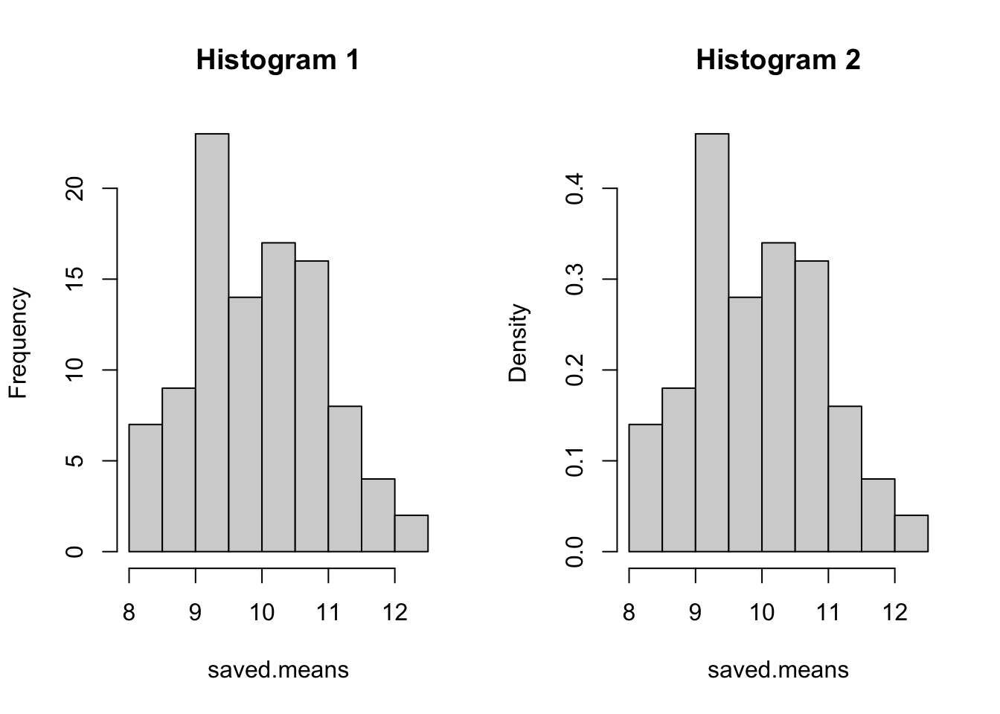
The sum of the densities can exceed 1.
sum(h2$density) [1] 2This next line says, ‘compute the mean of the difference between break points’. In other words, this tells us how wide the average bin is and, since the default is equal bin widths, we get are able to determine all bin widths.
mean(diff(h2$breaks,lag = 1)) [1] 0.5The next line shows that the total area (i.e., the area of a rectangle being length times width [ in this case, the sum of the heights of all bars multiplied by the average width of the bars]) is equal to 1, just like the total probability.
sum(h2$density)*mean(diff(h2$breaks,lag=1)) #is equal to 1 [1] 1How did R know how to pick the bins for your histograms? It uses a two step process. 1st, it follows a general purpose rule that works well for many datasets. 2nd, it then employs a process that adjusts the number of bins based on how that data might appear in your plot. The 1st step can be multiple rules but the default is what’s called the Sturges’ Rule. That rule is the following: ceiling(log2(length(x)) + 1) where x is the thing you want to make into a histogram (i.e., your data). log2 says compute the log with base 2. and ceiling says round any non-whole numbers up to the next highest whole number.
Here are some other rules for determining the number of bins to use in a histogram:
Scott, D. W. (1979). On optimal and data-based histograms. Biometrika, 66, 605–610.
Wand, M. P. (1995). Data-based choice of histogram binwidth. The American Statistician, 51, 59–64.
Sheather, S. J. and Jones, M. C. (1991). A reliable data-based bandwidth selection method for kernel density estimation. Journal of the Royal Statistical Society, Series B, 53, 683–690.
The Square-root Rule: Number of bins = ⌈√n⌉
The Rice Rule: Number of bins = ⌈2 * 3√n⌉
The Freedman-Diaconis’ Rule: Number of bins = (2*IQR) / 3√n where IQR is the interquartile range
Sidenote: Misleading density plots.
Compare the following two plots.
par(mfrow=c(1,2)) misleading.density.data <- c(rep(0,21),rep(1,13),rep(2,4),rep(4,4)) #'rep(x,y)' will make y copies of x. plot(density(misleading.density.data),main='Density plot') #Density plot hist(misleading.density.data,main='Histogram') #HistogramDid you see how the density plot showed values that extend beyond the data?
Did you see how a value of 3 shows at approximately .03-.04 in the graph but there are no 3s in the ‘misleading.density.data’ object?
Moving on to the density plots of the object ‘saved.means’:
d1 <- density(saved.means, bw= 1) #bw stands for bandwidth. It is comparable to standard deviation.
d2 <- density(saved.means,bw = 3)#Higher bw results in density plot that is smoother due to kernel being applied widely across data points in each computation.
d3 <- density(saved.means,bw = .1) #Lower bw results in fewer points involved in each density computation and a plot that will be much less smooth.
y.max <- max(c(d1$y,d2$y,d3$y))
plot(d1,col='red',lwd=2,ylim=c(0,(y.max+.05))) #lwd adjusts the width of the line. values greater than 1 increase its thickness when plotting. #ylim sets the plotting limits for the y-axis on the plot. We've adjusted here so that no lines will run off of the screen.
lines(d2,col='blue',lwd=2) #'lines()' adds a line to the existing plot.
lines(d3,col='purple',lwd=2) 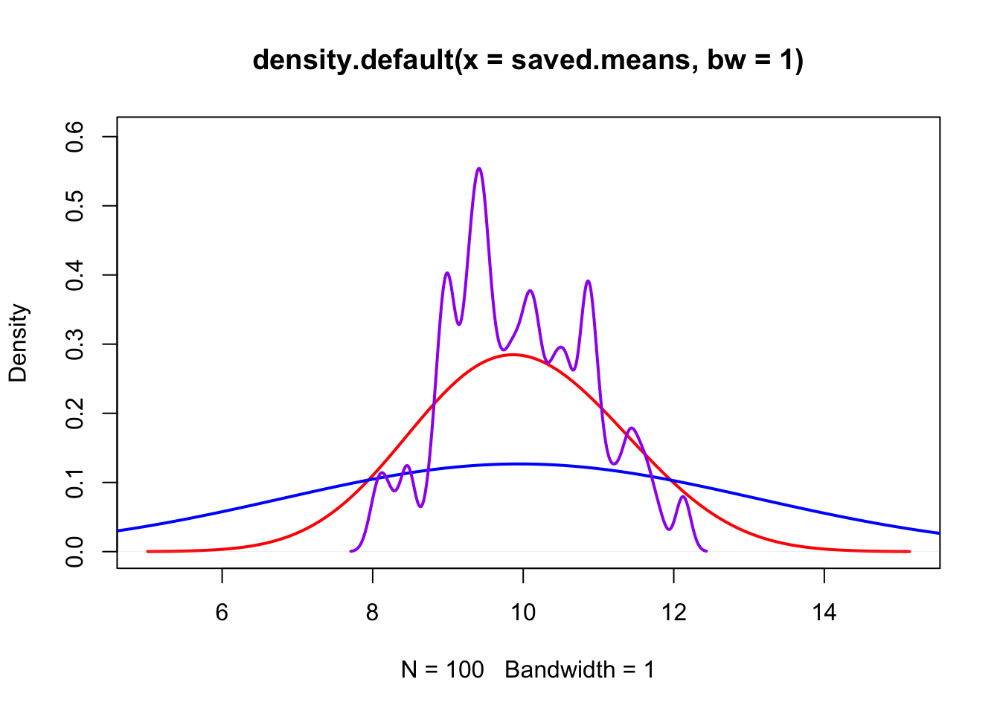
We can also overlay the density plots with the histogram:
hist(saved.means,probability = TRUE,breaks = 20)
lines(d1,col='red',lwd=2)
lines(d2,col='blue',lwd=2)
lines(d3,col='purple',lwd=2)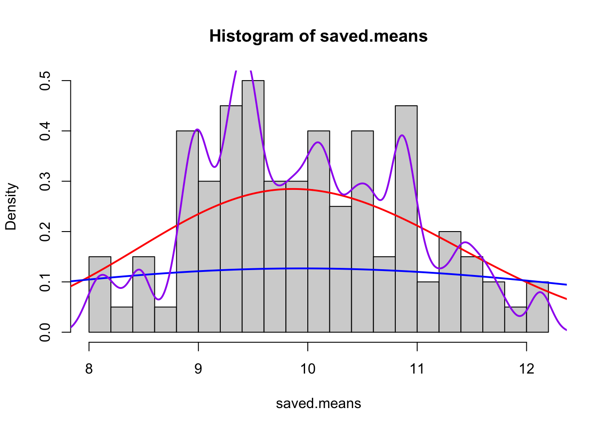
What are we looking at in the plot?
We see the histogram and overlaid on top are the various density curves. Some are more suitable than others. In particular, we see that the first density plot (in red) provides a good balance between smoothness and close adherence to the underlying data conveyed by the histogram.
We also see that the blue curve looks like it was not sensitive to the data enough and that purple was a little too sensitive.
Lastly, the ‘tallest’ point is fairly close to 10.
What happens if we just keep adding repetitions?
So far we only ran gathered 100 samples, each with 100 members. Let’s do another 10,000 repetitions. That’s not a lot but if we used a ‘for’ loop. It could take a while depending on how we set up our code. Another efficient strategy is to use a ‘vectorized’ function.
Vectorized functions are functions written in a way to minimize redundancy at the binary level by reusing operating instruction. (see: SIMD) In the ‘for’ loop above, each repetition requires saying ( in code ) something like ‘hey, compute a mean here on this set of numbers.’ Put differently, if we wanted to compute the sum of a set of 100 numbers, we would have to call the sum function 100 times. In a vectorized function, the function says something like ‘hey, compute a mean for this chunk, the next chunk, the one after that.’ So, we’re giving 1 set of instruction and we’re getting multiple operations out of that set. In the implementation above, the object that stores the results is also being modified in a way that it has to keep getting updated and expanding in size. We could ‘pre-allocate’ the space of the object and then replace values as needed as an alternative. Ultimately, though, this extra stuff happening in the background translates longer compute times that can be avoided.
In R, basic vectorized functions are named apply, sapply, lapply, tapply. #The most similar to a ‘for’ loop is the sapply. I think of the ‘s’ as ‘sequence’ (there is a seq function in R also for sequences)
Sidenote: Parallel computing
Many modern central processing units (CPUs) have multiple cores each with additional logical cores. With resepct to R, each logical core is able to be assigned a computational task. The idea is that a program can be designed so that tasks are executed in parallel on physical cores and sub-processes trade-off in tandem within logical cores since there will be delays due to data leaving the CPU and returning again. Vectorized functions do not take advantage of those cores. R, however, does have the capability to run operations in parallel on each core. To do that you can follow the following chunk of code (though it is unnecessary for a mere 10,000 iterations) A package for doing so is the ‘parallel’ library. install.packages(‘parallel’)
It’s also possible to use the parallel package to run a process in parallel across multiple computers on the same network or over the internet. However, the setup will vary from one network to the next. Additionally, there will be more overhead along the way. For instance, the data must travel from one hard-drive, to the RAM, to the CPU, to the network card and down to the CPU of the other machine. Each link in the chain adds additional time and serves as a potential new source of failure. Consequently, the setups have a tendency to be more ‘fragile’. Nevertheless, for a setup on the same network, the machines simply need to be able to communicate via ssh. Once enabled, the function is the same as below but ‘detectcores’ is replaced with the ip addresses of the machines. The ip addresses will indicate each process to run so to use all cores, they should be multiplied. For example, 1 core using both logical processors should have the same ip address included 2 times.
As a better alternative, there are many tools, such as Hadoop or Spark, that are specifically designed for distributing processes in a manner that is more fault tolerant and scalable.
cl <- parallel::makePSOCKcluster(parallel::detectCores()) #This is 2 functions, the outer function makes a cluster of R instances (it's like opening Rstudio over and over again in the background). The detectCores() function detects the number of cores on your computer's CPU. #cl <- parallel::makeForkCluster(parallel::detectCores()) #If you are on Mac or Linux use this version. A Fork cluster will split your current session into multiple sessions so that all the objects stored in memory have the same location in your machine's Random Access Memory (RAM). These are both a) faster to launch and b) have a smaller overall memory footprint. Also, you do NOT have to use clusterExport when using a Fork.
Sidenote: Syntax for packages
I’ve used ‘parallel::’ above instead of first calling the package with library(‘parallel’). This is a shortcut and when you get into complex data analysis in R, it’s is generally a better practice because it avoids name conflicts. For example, if you have 2 libraries activated and both libraries use the same name to call a function, then the library called most recently will be the first place R searches for the function. That can be a problem when the functions do different things.
parallel::clusterExport(cl=cl,varlist=list('population','n')) #This function says, 'export the objects called 'population' and 'n' to the nodes in the cluster called 'cl'. saved.means.10k <- parallel::parSapply(cl=cl,1:10000,function(repetition){ data <- sample(population,size=n) return(c(mean(data),sqrt(mean((data-mean(data))^2)))) #This line says to concatenate (combine) the mean of data and sd of data into an object and return that object for each repetition. }) parallel::stopCluster(cl=cl) #If you start the cluster, you want to stop the cluster. If you don't, R can get confused and will have erratic performance issues. #End of: Parallel computing
Vectorized R function starts again here:
saved.means.10k <- sapply(1:10000,function(repetition){ #print(repetition) #Printing does take time but you can use this to see the time difference between a vectorized function and a 'for' loop that doesn't use pre-allocation. Do so only in a regular R script to see the console printing in real time (i.e., don't use markdown)
data <- sample(population,size=n)
return(c(mean(data),sqrt(mean((data-mean(data))^2)))) #This line says to concatenate (combine) the mean of data and sd of data into an object and return that object for each repetition.
}) #What is the result? dim() tells us the dimensions of the result. typeof() tells us what type of object the result is. For example, it could be a list, a dataframe, or a matrix.
dim(saved.means.10k) #Returns 2 10000. This object is a matrix. It has 2 rows and 10000 columns. The top row is the mean of data for each sample and the bottom row is the sd for each sample.[1] 2 10000#Let's convert the saved.means.10k to a more widely known (i.e., excel style) format.
saved.means.10k <- t(saved.means.10k) #t() is a function for transposing a matrix. That just means, 'swap the rows and columns with each other' So now we have a matrix with 2 columns and 10000 rows. The first column is the mean of data for each sample and the second is the sd for each sample.
#Let's look at the density plot again.
plot(density(saved.means.10k[,1])) #The notation [,1] allows us to access the 1st column. If we can use this notation to select individual entries as we desire. For example [1,1] means 'take the entry located at the intersection of the first row and first column.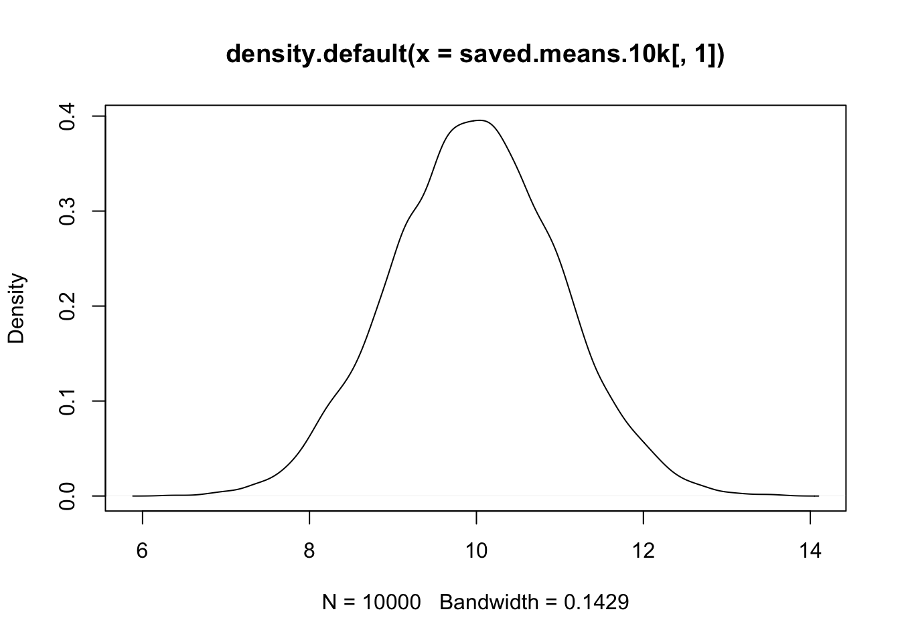
The new 10k means distribution looks highly symmetrical. The tallest point or ‘peak’ is almost exactly at 10. It would be even closer if we ran more iterations… perhaps 100k.
Why are we seeing this normal looking distribution emerge? There are at least 2 related explanations.
The first explanation is that the the ‘mean’ is an ‘unbiased’ and ‘consistent estimator.’ Unbiased estimators are estimators for which their mean value of the estimator, as computed from finite samples, is equal to the true population value. So, the peak occurs at the value of 10, in part, because estimating the population mean from the sample mean IS unbiased. Consistent estimators are estimators of population values that will converge to the true population value as the sample size approaches infinity. We only chose a sample size of 100 in this example, but we could just as easily increase the sample size to observe the consistency property.
The second explanation is that the Central Limit Theorem is applicable to means. Broadly, this theorem states that no matter what distribution the population data possess, the means, taken by repeatedly computing means from samples drawn from the population, will be normally distributed. So, the central limit theorem alone tells us that a distribution of means has a characteristic shape and the properties of unbiasedness and consistency tell us that the characteristic shape (i.e., a normal distribution shape) will be centered on the true population value.
More notes about bias and consistency: An estimator can be biased but consistent or unbiased but not consistent. Variance is one such example. Estimating population variance from any finite sample will be biased but with an infinite sample size, variance will be equal to population variance. Intuition explains why variance is biased but consistent. Variance measures the spread of a distribution. To make the measurement of a distribution, all the sampled points must be sampled from WITHIN that distribution. However, the only way to properly account for the most extreme values of the distribution is to have the entire distribution included in the measurement. So, variance systematically underestimates the true population variance. To get around the issues that arise from that, we use a correction factor (n-1), which is intimately associated with the concept of Degrees of Freedom discussed later.
Standard deviations are also a mean. So the same observation applies to them. But, we see that this distribution is ever so slightly peaked lower than 10.
plot(density(saved.means.10k[,2])) 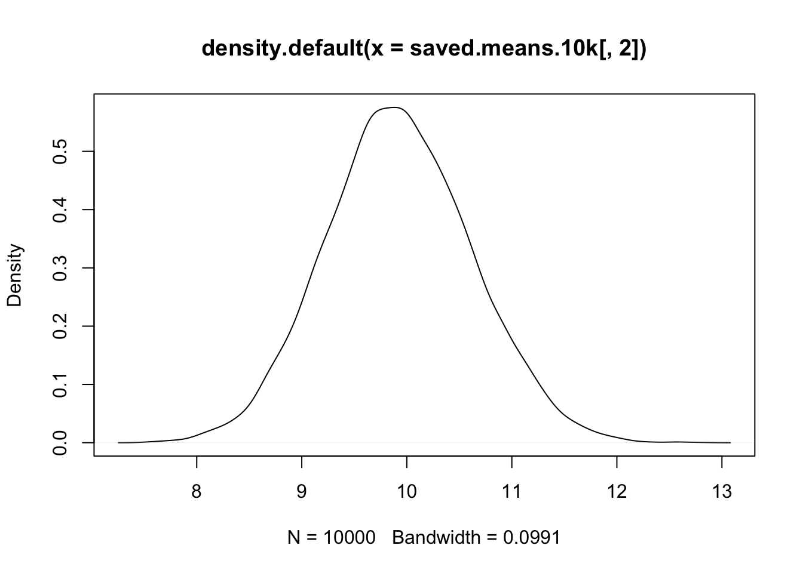
print(mean(saved.means.10k[,2]))[1] 9.941585Previously we computed the standard deviation as sqrt(mean((data-mean(data))^2)). Now we will correct the formula by adding in the correction factor. Instead of dividing by n we will divide by n-1… In code, the mean() function already divided by n. So, first we multiply by n to undo the division. Then we divide by (n-1).
corrected.standard.deviations <- sapply(1:10000,function(repetition){
data <- sample(population,size=n)
return(c(sqrt(mean((data-mean(data))^2)*(n/(n-1))), #The corrected computation
sqrt(mean((data-mean(data))^2)))) #The original computation for comparison purposes.
})
corrected.standard.deviations <- t(corrected.standard.deviations) Above, we computed the corrected (i.e.,estimated population standard deviation) along with the uncorrected estimate. We can compare them using the code below. Read as: the difference between the true population standard deviation (10) and the estimated population standard deviations with a correction factor (n-1) is smaller than the estimated population standard deviations without a correction factor. The corrected standard deviation is a better estimator.
Sidenote: n-1
n-1 is referred as the Bessel correction. As you can see, it works reasonably well. However, other correction factors exist or could be constructed to produce an even better estimator. In particular, for extremely small sample sizes (n of about 30), the correction factor isn’t perfectly optimal. However, the benefit would still be quite marginal.
10-mean(corrected.standard.deviations[,1]) < 10-mean(corrected.standard.deviations[,2]) #Returns: TRUE [1] TRUE
Simulated a population
Defined a measurement for the population
Created samples from members drawn from the population
Examined the behavior of the sample mean as an estimator for the population mean (with histograms and density plots)
In real life, we don’t have 10k samples. We get just 1 usually. But other researchers might study the same topic and they might compute their own sample means. How can we compare the quality of the two? Moreover,how can we make a statement about the true population mean while accounting for the quality of our sample mean?
Well, when we computed the 10k means, we found that they too formed a distribution. What was the standard deviation of that distribution?
sd(saved.means.10k[,1]) #approximately 1. Likely to be slightly less than 1. [1] 1.003788Why? Because the standard deviation of this ‘distribution of sample means’ is related to the sample sizes.
Conceptually, it has a standard deviation and its standard deviation must be linked in some way to the standard deviations of the sample data that are used for constructing the sample means. We can imagine this link exists by considering what shape our distribution would have if the sample data had standard deviations that were either very small or very large, perhaps 0 and 1000 (i.e., 100 times greater than the 10 we set earlier). With 0, all means would be found right at 10 and there were be no variance in this distribution of sample means. At 1000, each sample mean would have a greater chance of being very far from 10 because there would be many ways to randomly select population members that all fall well below 10 or well above 10. So, there is a link here. It turns out that the link is surprisingly straightforward to identify. It is shown below.
A <- sd(data)/sqrt(n) #This is the link. We call it 'standard error'
B <- sd(saved.means.10k[,1])
all.equal.numeric(A,B,tolerance = .1) #all.equal.numeric compares the A with the B. if their difference is smaller than value set for tolerance, the function returns TRUE. [1] TRUESince we only computed B from 10k means, rather than an infinite set of 100 member samples, it won’t be exactly 1. Likewise, our estimate contained in A is based on a single sample with 100 members. In other words, the fact that the two (A and B) are even remotely close IS AMAZING. sd(data) is an approximation of the population standard deviation we defined earlier. So the all.equal.numeric function may not return ‘TRUE’ in some instances. It would be exactly equal to 10 in an ideal world or over infinitely many samples. So putting it all together here. We defined our population standard deviation as 10 and we have also made each sample with 100 members selected at random. So we have 10/sqrt(100) == 1.
and we can use the same approach as previously to verify. That is, we can estimate the standard error from every sample to form a distribution that should be centered on 1. so…
distribution.of.estimated.standard.deviations.of.the.distribution.of.sample.means <- sapply(1:10000,function(repetition){
Y <- sample(population,n)
return(sd(Y)/sqrt(n)) })
plot(density(distribution.of.estimated.standard.deviations.of.the.distribution.of.sample.means),main= "Distribution of estimated standard deviations \nof the distribution of sample means",) 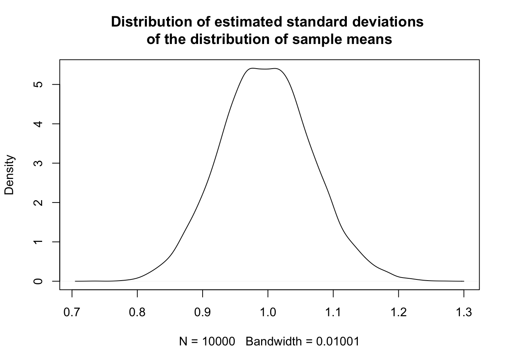
Our plot confirms there is a variance in the estimated standard error but that our estimates are very close to 1 (which is the true value).
Sidenote: A general formula for standard error of standard errors
Yes, you can compute the standard deviation of this new distribution using the same formula as above: ((sd(Y)/sqrt(n))/sqrt(n)). and again and again. The general formula is ((sd(Y)/n^(X/2))) where X is equal to the number of “regresses in the series of infinite regresses”. I don’t know why you would though.
X <- 1 Y <- sample(population,size=n) (sd(Y)/sqrt(n)) == (sd(Y)/(n^(X/2)))[1] TRUE
There are several reasons:
The most important reason is that deriving the formula for standard error can help us to avoid “fluff” or “hand-wavy” understandings of uncertainty in statistical analysis. Without a rigorous understanding of standard error, there is still a need to understanding uncertainty. Consequently, people are tend to fill the gap with their own intuitions, which are known to be biased in several ways. For example, it has been shown that even among experts there is a tendency to conflate the information provided by standard error estimates with the practical significance of a model. So, by deriving the formula for standard error, we can develop a deeper and more precise understanding of the sources of uncertainty in statistical analysis.
Related examples:
2. McCloskey, D. N., & Ziliak, S. T. (1996). The standard error of regressions
We want to prove to ourselves that there is a relationship between sample standard deviation and samples size that we can leverage later on in statistical inferences.
By deriving the formula, we will discover the importance of having a representative sample and of sampling at random.
Of the tools we can learn, standard error is one of the most widely used. Learning its derivation will help us to think about how statistical measures are discovered.
Understanding the standard error can help us to interpret the results of statistical analyses. For example, if we calculate a confidence interval for a population parameter using the standard error, we can use this interval to make inferences about the population with a known level of confidence. We’ll do that below.
Understanding the derivation of the formula for standard error can help us to appreciate the historical and theoretical context in which statistical methods were developed. By understanding the historical development of statistical measures, we can better understand their purpose and use them more effectively in modern data analysis.
To derive the formula (sd(Y)/sqrt(n)) we will follow a multi-step process. Rather than basic arithmetic, it includes basic algebra combined with careful consideration of the objects we are manipulating.
For simplicity, I’ll write the proof in terms of Variance. Standard Deviation is just the square root of Variance. Variance is just the average squared difference from the mean. Also, this proof serves as one of the reasons WHY we use the square when computing standard deviation (rather than using absolute values).
To construct a proof of standard error, we need something called Computational Variance. Computational Variance is just an equivalent form of the variance formula that we can derive by algebraic manipulation of the variance formula. We’ll construct that first. In brief, rather than computing lots of squared differences, the Computational Variance formula computes the difference between the mean of squared sample values and the square of the mean of sample values. In other words, we’re just rearranging where the squaring is done either before or after computing the mean. In code: var(Y) == mean(Y2)-mean(Y)2 After deriving this formula we’ll then use some more algebra on this computational variance formula to derive the formula for the standard deviation of the distribution of sample means (i.e., standard error) as shown above.
Let’s start by making a simple set of measures to use for testing where we can test.
Y <- sample(population,size=n)Next, we write about the ‘mechanical’ version of Variance. That is, we start with it’s definition as ’the average squared deivation from the mean).
(var(Y)*99/100) == mean((Y-mean(Y))^2) #is TRUE. #If returns FALSE: [1] TRUEall.equal((var(Y)*99/100),mean((Y-mean(Y))^2), tol=.1) #the function var() returns the estimated population variance it divides the sum of squared errors by n-1 instead of just n. Again the -1 in n-1 has to do with the concept of Degrees of Freedom covered later. For now, to obtain an equality, the *99/100 is like saying 'multiply by n-1 to cancel out the n-1 we originally divided by, then divide by n.' [1] TRUEWe will work with the right-hand side.
mean((Y-mean(Y))^2) #This expression (same as above) is a quadratic. We can expand it. [1] 112.7932mean((Y-mean(Y))^2) == mean(Y^2)+mean(Y)^2-mean(2*Y*mean(Y)) #Is TRUE. [1] FALSENow comes our first ‘substitution.’ We’ll note that the 3rd term looks weird but, because the sample mean is an unbiased estimator of the population mean we can replace mean(2Ymean(Y)) with 2*mean(Y)^2 (i.e.,2 times the mean squared).
mean(2*Y*mean(Y)) == 2*mean(Y)^2 # This line may return FALSE but we can confirm it is TRUE:[1] TRUEcat(paste('Left-hand side',mean(2*Y*mean(Y))),paste('Right-hand side',2*mean(Y)^2), sep = "\n")Left-hand side 236.062300529907
Right-hand side 236.062300529907Now, we swap in our substitution:
mean((Y-mean(Y))^2) == mean(Y^2)+mean(Y)^2-2*mean(Y)^2 #Swap in the 3rd term again, now in this new form. #Is: TRUE.[1] FALSEcat(paste('Left-hand side:',mean((Y-mean(Y))^2)),paste('Right-hand side:',mean(Y^2)+mean(Y)^2-2*mean(Y)^2),sep = "\n")Left-hand side: 112.793249922528
Right-hand side: 112.793249922528Look closely at the right-hand side of the formula. It has 3 parts. Part 1: mean(Y^2) Part 2:mean(Y)^2 Part 3:-2*mean(Y)^2.
Parts 2 and 3 are the same. So, we combine them:
mean(Y)^2-2*mean(Y)^2 == -(mean(Y)^2)# 1-2 = -1. [1] TRUESo, we finally have Part 1: mean(Y^2) and the Part2/3 term: -(mean(Y)^2). That’s Computational Variance:
var(Y)*(99/100)== mean(Y^2)-mean(Y)^2 #Is TRUE.[1] FALSEcat(
paste("Variance formula result:",var(Y)*(99/100)),
paste("Computational Variance formula result:",(mean(Y^2)-mean(Y)^2))
, sep = "\n")Variance formula result: 112.793249922528
Computational Variance formula result: 112.793249922528Above we have derived the computational formula for Variance. How then do we get this idea that the standard deviation divided by the square root of n will very closely approximate the standard deviation of the distribution of sample means? A key idea is that we need to remember that standard error is about the means of samples and that a collection of samples (each of which have different sample members) is itself a sample (i.e., a sample of samples). This means that Computational Variance also applies to a sample of means.
So, we continue the derivation by recalling that every member of the set Y in the case of the distribution of sample means, is a mean (equal to sum(X)/n) and that we’re trying to estimate the variance of ‘all possible sample means’. That is, individual sample means are computed by summing and dividing by n. So, we continue by replacing Y with sum(X)/n. The X refers to the different collections of sample members.
Next, we do some basic algebra. There are 2 key observations here:
First, since the denominators are all equal, we can rearrange the equation. Instead of dividing, let’s just extract the common denominators from the sums and divide later. For example:
#On the left, each term is divided by 2. On the right, we extracted the common denominator.
(10/2)+(2.5/2)==(1/2)*(10+2.5) [1] TRUESecond, there is an important mathematical identity involved called Bienaymé’s identity. The identity is the following: Var(X + Y) = Var(X) + Var(Y) + 2Cov(X,Y). In words, it says that the variance of the sum of X and Y is equal to the sum of the variance of X with the the variance of Y and 2 times the covariance of X and Y. Covariance is computed by multiplying each sample member of X with a corresponding sample member of Y and then computing the Variance in the same way as we have above.
Critical insight: when two samples are fully independent, their covariance is 0. Therefore, it follows from Bienaymé’s identity that Var(X+Y) will be equal to Var(X) + Var(Y) when samples are fully independent. Consequently, when we estimate standard error, we are assuming that all the sample means are independent from one another. This can only happen if the samples are selected at random. (This is one of the reasons why it is important to sample randomly). If the sample means are all independent from one another, their respective sample variances can be summed. Given that their sample variances can be summed, we can use Computational Variance.
Let’s demonstrate with 100 samples, each with 100 observations. We will generate 100 samples, each with 100 members. We then compute the mean of each sample. Last, we computed the variance of those means. This is approximately equal to sd(data)/sqrt(n) as above.
many.samples <- sapply(1:100,function(repetition){
sample(population,n) })
var(colMeans(many.samples)) #approximately 1.[1] 1.075081var(colMeans(many.samples)) == var(colSums(many.samples)/n) #TRUE [1] TRUEThe next line is pseudo-code outling the syntax for computing the mean of several variables simultaneously with one line of code in R. colSums takes the sum of each columns, colMeans takes the mean of each column
#'all possible sample means' == sum(X)/n == colSums(many.samples)/nall.equal.numeric( var(colMeans(many.samples))*(99/100), (mean((colSums(many.samples)/n)^2)-mean(colSums(many.samples)/n)^2)) #Returns: TRUE. [1] TRUEConceptually: var(‘all sample means’)= mean((sum(X)/n)^2) - mean(X/n)^2. The above expression is the computational variance formula. We’ve simply swapped Y with sum(X)/n
Now, we’re going to rearrange the right hand side of the expression. Specifically, we’ll extract the n’s. All the denominators in the expression are n^2… so we put that in front and add parenthesis around what’s left behind.
all.equal.numeric(
var(colMeans(many.samples))*(99/100),
(1/n^2)*(mean(colSums(many.samples)^2)-mean(colSums(many.samples))^2))[1] TRUE#Conceptually: var('all sample means')= (1/n^2)*(mean(sum(X)2) - mean(X)^2)
#and the second term: (mean(sum(X)\^2) - mean(X)\^2) is computational variance. #so, replace the 2nd term.
all.equal.numeric( var(colMeans(many.samples))*(99/100),(1/n^2)*var(colSums(many.samples))*(99/100)) [1] TRUE#Conceptually: var('all sample means')= (1/n^2)*var(X)So, now that we extracted the n, what is var(X)? Before this rearrangement, it was ‘all sample means’. But we removed the ‘mean’ part by removing the division by n…. So what we’re left with is ‘all sample sums’. So var(X) is the variance of all sample sums. BUT, because the observations are each independent from one another, we can rewrite this var(X) term to be something more useful. The independence assumption (requirement) is important here because if the samples are not independent, they, by definition, co-vary and that means some of the variances will be ‘pulled together’ or ‘pushed apart’. The consequence would be an estimate that is larger or smaller. Non-independence can be accounted for, but it requires a different formula.
all.equal.numeric(100*sd(data)^2,var(data)*100)[1] TRUEThe variance between sums of sets of scores is equal to the sum of the respective variances for each set. (again,formally known as Bienaymé’s identity). The consequence of this arrangement is that we can swap var(x) with sum(colVars(many.samples))
colVars <- function(y){apply(y,2,function(x){var(x)*(length(x)-1)/length(x)})} #colVars isn't a function in R so I've defined the function here first.
sum(colVars(many.samples)) #What this code says in words: take the sum of variances where each variance was computed from each sample and each sample is represented as 1 column in the many.samples object. [1] 9829.221var(apply(many.samples,1,sum))#What this code says in words: sum up the elements of each row in many.samples, then compute the variance from the result.[1] 11689.41Below IS equal to the previous line IF and ONLY IF the members of each sample are independent and identically distributed. In other words, all the sample members belong to the same population but each member was sampled independently from all others.
var(apply(many.samples,1,sum)) == sum(colVars(many.samples))#Returns: FALSE. [1] FALSEWhy does it return FALSE?
I just told you that these two expressions are equivalent but only under the condition specified. And we know, they are equivalent. However, we will only observe that they are equivalent if the variances of each of the samples is the same…. So, we know that because the samples are all drawn from the same population, the variances are all the same IN THEORY, but our empirical estimates of the variances are NOT the same. They’re not the same because we’re currently simulating with finite numbers of samples, each with finite numbers of members. If we want to prove this to ourselves, then as before, we can conduct the same sampling scheme as we have done above. That is, we re-run the simulations over and over again to see where the distributions are centered. I’ll do that in the next codeblock below.
#This codeblock begins with {r, eval=FALSE}. By setting eval=FALSE, we're telling the website to display this code but not execute it when rendering.
#If you are using mac or linux, use makeForkCluster to save on memory requirements.
cl <- parallel::makeCluster(parallel::detectCores())
parallel::clusterExport(cl=cl,varlist=list('population','n','colVars'))
many.samples.distribution <- parallel::parSapply(cl=cl,1:1000,function(iteration){
many.samples.internal <- sapply(1:100,function(repetition){
sample(population,n) })
dist.one <- var(apply(many.samples.internal,1,sum))
dist.two <- sum(colVars(many.samples.internal))
return(c(dist.one,dist.two))
})
many.samples.distribution <- t(many.samples.distribution)
parallel::stopCluster(cl=cl)I ran this 3 times under increasing iterations. These are variances so to get back to standard error we divide by n (100) and then take the square root. (i.e., (sqrt(113.7684/100)))
At 500 iterations the means of the distributions were:
113.7684 114.1263
At 1,000 iterations the means of the distributions were:
114.7004 114.2256
At 2,000 iterations the means of the distributions were:
114.6429 114.1917
These simulations are showing that as the two expessions are equal in expectation. In this context, saying, ‘in expectation’ means that as our number of simulations approaches infinite, our estimate converges to a specific value.
Alternatively, we can think about it some more. Conceptually, there are an infinite number of ways to co-vary and there is only 1 way to not co-vary. So, the chance of not co-varying is essentially 1 divided by infinity. We’re going to always observe some variance in our estimates here. So, the algebra above will only work exactly correctly in the case of an infinitely large sample of means because without an infinitely large sample, the individual sample means will not be perfectly independent.
One more intuition concerning why this makes sense. If each member of each sample is drawn completely independent from the other members and all members are drawn from the same population, then there is nothing which says we can’t simply ‘make’ new samples from the samples we have available. In other words, there is no harm in taking members from ‘Sample A’ and exchanging them with members of ‘Sample B’. In fact, this property is related to the concept called ‘exchangeability’. Exchangeability just means that the observations in a set can be reordered without affecting the distribution. In this case, it means the distribution doesn’t change despite swapping sample members.
So, despite our inability to compute exactly the correct values, we’re not stuck. As you can see, the two sets of values are still very close and have an expectation that makes the statement true if we were to simply repeat the process an infinite number of times. There’s just a bias here due to the finite sampling. Which leads to an important note: with finite samples there are better alternative formulas with less bias. However, those formulas come with trade-offs of their own. Nevertheless, the expected (mean) variance for each sample should be the population standard deviation squared.
Sidenote: A note about a finite sample formula
We can see that neither of the two expressions above are exactly equal. But they are close. Sure, we could use a finite sample variant but even with this version of standard error we’re already accurate to within 97-98%. So we’d really be just chasing down something minor.
Lastly, we can finish the derivation.
At this point we are saying that, analytically, we have the sum of a set of variances, and we have defined the set of variances so that each sample has the same variance.
From that point, we can say that we have n X ‘the population variance’ (i.e., n multiplied by the population variance). THIS is the final piece of the puzzle trick. Put differently, we are saying, ‘hey, all of those variances are equal to the population variance (in expectation)…so let’s just replace the sum of the set with the population variance multiplied by the number of samples to simplify the math. We can do that because the sum of a set is equal to the average of a set multiplied by the number of members in the set.’ Example:
all.equal.numeric(mean(c(1:10))*10,sum(c(1:10)))[1] TRUEFrom there, we have already estimated the population variance, with our sample variance and sample standard deviation. Recall that means are consistent and unbiased estimators… So if we have 1 sample to go on, then the best estimate of the ‘population variance (which is just a type of mean)’ will be the variance of our current sample.
Therefore:
all.equal.numeric(var(colMeans(many.samples))*(99/100), (1/n^2)*n*var(data),tolerance = .2) #Is TRUE. If returns FALSE: Remember, it's an estimate based on finite samples. [1] TRUE#and reducing the n's.
all.equal.numeric(var(colMeans(many.samples))*(99/100), var(data)/n,tolerance = .2) [1] TRUE#and taking the square root.
all.equal.numeric(var(colMeans(many.samples))*(99/100), sd(data)/sqrt(n),tolerance = .2)[1] TRUEThe derivation is complete. To summarize, sd(data/sqrt(n) is an estimate for the standard deviation of the distribution of sample means. The technical name for that term is Standard Error of the Mean.
End of the Derivation.
A lot actually. Here are at least 2 things:
First, it tells us by how much we would need to increase our sample size to reduce the imprecision in our mean estimate. 1/sqrt(n) is the rate. So to cut the standard error in half, we need 1/sqrt(n*4) or a sample that is 4x as large.
Second, we now have a basic ingredient for statistical inference. If we know the means of a group measured on some variable, and if we know the precision of our estimate, we can test whether our observed mean is the same or different than some other value.
Relatedly, we can analyze our data in such a way with this same tool, for example, if we have 2 groups and we wish to determine whether the group means are the same or different.
Let’s turn our focus to this second use case.
The second use case is really all about t-scores and t-tests. t-tests are often taught as these opaque tools where you ‘get a t-score’ and compare it to the ‘critical value’ in a ‘t-table.’ If you attempt to look up where the values from this ‘t-table’ come from on the internet, you’ll likely not get a clear answer and most will say the math is complicated. People who say that the math is complicated are correct but only if you need the exact values from an analytical expression (i.e., a closed-form expression). In R though, we can produce these values simply with code, using the tools we’ve covered up to this point. AND we’ll get a much better understanding of them along the way.
A t-score refers to the number of standard deviations away a given score is from the mean of the t-distribution. So what is the mean of the t-distribution? It’s usually 0.
Why? We choose 0 because of how we will define a t-test. A t-test is a method for assessing the difference between our observed mean and “some other value.” Typically, research hypotheses concern whether ‘things are the same’ or ‘things are different.’ and if we think about what ‘things are the same’ could mean quantitatively, we arrive at the idea that ‘a number’ minus ‘another number’ is 0 IF the two numbers are equal.
However, given what we know about randomness due to random sampling variability at this point, we also know that we’ll never observe an exact difference of 0 even if the true difference at the population level IS 0.
Let’s prove that to ourselves right now.
We’ll draw 20,000 samples, each with 100 members, from the a population and compare their means.
differences <- sapply(1:10000,function(repetition){
sample1.mean <- mean(sample(population,size=100))
sample2.mean <- mean(sample(population,size=100))
return(sample1.mean-sample2.mean)})
any(differences==0) #Returns: FALSE. The function any() will return 'TRUE' if any of the conditions contained within it are TRUE. The condition differences==0 compares every observed difference with 0 to see if they are equal.[1] FALSESo, we never observe an exact difference of 0 and we do observe lots and lots of differences that arise purely to random sampling variability. How, then, in the real world, do we know when the difference we do observe is not simply due to that random sampling variability? We turn the problem inside out.
Sidenote: Why do we care about random sampling variability?
We care to know whether a difference that we have observed is due to random sampling variability or not because it is a direct reflection of the quality of the discriminations we want to make. For example, If a police officer is conducting an investigation and relying on certain behavioral indicators to determine whether someone is lying or not, but those indicators are not valid, it could lead to incorrect conclusions and potentially cause harm to innocent individuals.
For example, imagine a police officer conducting a traffic stop believes that if a suspect avoids eye contact during questioning, it is a sign that they are lying. This behavior is not a reliable indicator of deception.
If the officer relies solely on this indicator to make a determination of whether to probe further, there decisions would be approximately as reliable as deciding whether to probe or not based purely on whether a flipped coin lands on heads vs tails. In turn, they may falsely accuse innocent people of offenses they did not commit, resulting in serious consequences, such as wrongful arrest, a tarnished reputation, and even imprisonment.
Therefore, it is important for law enforcement officers to be aware of the limitations of behavioral indicators and to use them in conjunction with other evidence and investigative techniques. This can help ensure that their investigations are fair, accurate, and respectful of the rights of all individuals involved.
imagine a study of cancer treatements. Suppose that we have an expensive experimental treatment that we give to one group and not another group in an experiment. If, at the end of the study, the amount of cancer measured in both groups is so similar that we cannot determine whether the differences are attributable to random sampling variabiltiy, then it means that people who don’t receive the treatment have about just the same experience as those who do. In other words, one group spends a lot of money on a treatment and the other doesn’t, but both groups end up in the same place.
Instead of trying to prove that there IS a difference. Let’s try to prove that the difference we observe IS NOT due random sampling variability. How? Let’s look at the distribution of differences we produced above.
plot(density(differences)) 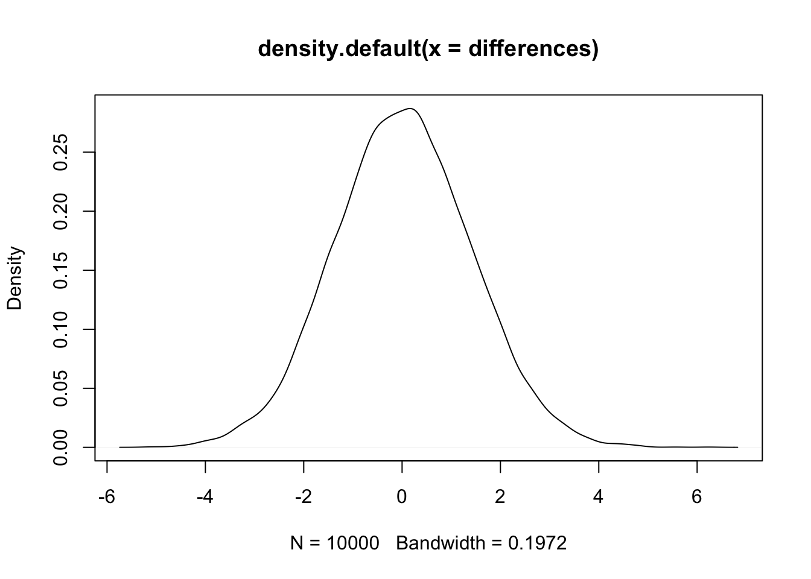
What do we see? We see that some differences occur with great frequency and other with rare frequency. But, we defined this distribution specifically so that we KNOW there are no differences at the population level. SO, if we observed a difference that was very very far away from the differences included in this distribution, we could be reasonably confident that the observed difference would not belong to this distribution and therefore would not be caused by random sampling variability. This line of reasoning is the CORE of statistical inference when probability is defined as a frequency.
Sidenote: Definition of Probability
Probability does not have to be defined as a frequency. A frequency does not encapsulate the entirety of probabilities. What if an event only occurs 1 time ever? And what about the past when an event has already happened. For example, you flip a coin and it lands either heads or tails… it either IS or IS NOT heads or tails after it has landed so talking about the frequency of landing isn’t so meaningful. Those events are encapsulated in Bayesian statistics. In Bayesian statistics, probabilities are more like a measure of belief. You can believe or not believe that a unique 1 time event will occur or that a coin has or has not landed on heads.
If we’re defining probabilities in terms of frequencies, then we need a unit of measurement. The differences distribution used above was the differences of mean scores and most data do not have this scale.
We could standardize the differences! Just divide by the standard deviation. That gives us a scale invariant interpretation of the difference scores.
BUT! We compared MEANs… so we should standardize by the standard deviation of MEANs… That is, we need to divide by Standard Error.
So, let’s go back and do that now:
standardized.differences <- sapply(1:10000,function(repetition){ n <- 100
a <- sample(population,size=n)
b <- sample(population,size=n) #We're comparing two samples here so we need to combine their standard deviations into a pooled estimate. IF population variances are equal you DON'T have to do this... But let's assume we don't know for the sake of precision and completeness.
sd.a <- sd(a)
sd.b <- sd(b)
pooled.sd <- sqrt(((sd.a^2)*(n-1)+(sd.b^2)*(n-1))/(n+n-2)) #This says 'multiply each sample variance by it's degrees of freedom. Then sum them. Then divide by the total number of observations minus the number of samples (i.e., the number of groups) pooled together. It looks fancy but it is just a weighted average. Lastly, compute the square root to convert the pooled variance back into standard deviation scale
standard.error <- pooled.sd*sqrt((1/n)+(1/n)) #two samples, both with n observations each.#Note: this is slightly different than formula for standard error as shown previously above. This shows sd(x)*sqrt(1/x). so the standard deviation is multiplied by sqrt(1/n) instead of divided by sqrt(n). They are equivalent and the version covered above is correct. BUT when we move to 2 samples this form is required or we need to add an additional constant to the denominator.
return((mean(a)-mean(b))/standard.error)})
sd(standardized.differences) #Returns approximately 1. [1] 0.9978579How delightful! Even though the standard deviation of the samples was 10 (because we set the population standard deviation to 10), we get back a distribution with a standard deviation of 1 (we used 10k samples so it might not be exactly 1 but it is 1 in expectation)… and it doesn’t matter at all what the standard deviation of the samples was in the original data, because we’re now talking about the standard deviation in the standardized data.
plot(density(standardized.differences))What do we see? It appears to be another normal distribution. It’s not. But it’s very similar. Our new really cool tool is the t-distribution. Specifically, we have the t-distribution with 198 degrees of freedom.
What percentage of the time is the difference between sample means (when both population means are identical) more extreme than either 1.96 or -1.96 standard errors?
mean(abs(standardized.differences)>=1.96)[1] 0.0512APPROXIMATELY 5%. THAT is where the t-table comes from. And, that number is a p-value. TO summarize, the p-value is the percentage of times/proportion of times, that the observed differences are as great or greater than the specified threshold.
In R, we can also verify this directly with a function qt(). You can see it’s formula on the help page. use: ?qt In this case, we had 198 degrees of freedom so we use that distribution. In the function below, we’re asking for the t-scores at each probability from .001 to 1.
analytically.computed.tscores <- sapply(seq(.001,1,.001),function(x){ qt(x,198)})
plot(density(standardized.differences))
lines(density(analytically.computed.tscores),col='red')And we can now see on the plot that both the analytically computed t-scores and the t-scores we computed from simulations are almost identical.
qt(.975,198) #The exact critical value for an 'alpha' of .05. [1] 1.972017Below is the estimated probability level using a two-tailed test. We will likely see a slightly different value than .05 value here because, our simulations can only operate within the distribution… so our simulation will have a tendency to systematically underestimate the amount of observations at the extremes.
mean(abs(standardized.differences)>=1.972017) [1] 0.0497Before going further. Let’s also look at how the t-distribution changes when we have fewer samples. Let’s compare the distribution when we have just 30 degrees of freedom and just 10.
t30 <- sapply(seq(.001,1,.001),function(x){ qt(x,30)})
t10 <- sapply(seq(.001,1,.001),function(x){ qt(x,10)})
plot(density(standardized.differences))
lines(density(analytically.computed.tscores),col='red')
lines(density(t30),col='purple')
lines(density(t10),col='blue') 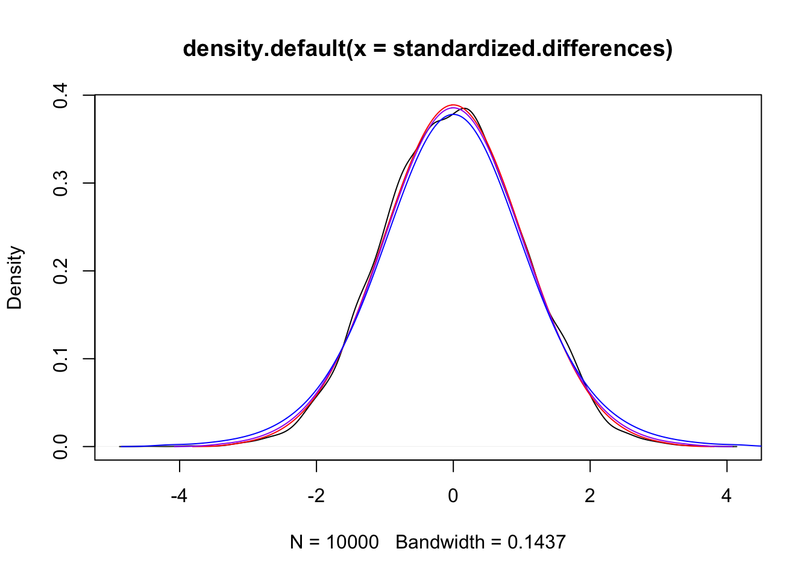
All curves are very similar…. HOWEVER, they’re not exactly the same. The t-distributions with fewer degrees of freedom are slightly lower in the middle near the ‘peak’ and slightly higher along the tails. You can see this more easily if you zoom in.
In the demonstration above we had two samples known to be drawn from the same population. In the real world, this is unknown. If fact, its essentially the question we’re trying to answer. So let’s turn to an example. Let’s use a classical example, ‘intelligence measurements’. The classical ‘intelligence measure’ is defined in such a way that the average score is 100 with standard deviation of 15.
Suppose we want to know if the average score on a measure of intelligence from a group of 500 college students is different from the population average.
Lets simulate the distribution of that population:
popdist <- rnorm(n=100000,mean=100,sd=15)
plot(density(popdist,bw=10),col='red',lwd=2,ylim=c(0,.05),xlim=c(0,190)) # bw is bandwidth. Larger bandwith = smoother plotting. col=color. lwd= line thickness. ylim/xlim set the limits of the plot axes.Now let’s simulate our single hypothetical sample:
data <- sample(85:115,size=500,replace=T,prob=c(1/(abs(24.9-(1:31))))) #This code below says, 'sample 100 values from the range 70 through 130. Since there are 61 whole numbers in this range and we need 500 samples, repeatedly draw values as needed. However, not all values are equally likely to be observed in this group. Instead, I'm making up scores. I'm telling the function to sample each value according to its probability of being observed which I've defined arbitrarily as 1/abs(45.9 minus the rank of value in the range of possible values)'
#The classical intelligence measure assumes a standard deviation of 15. So, we'll set our simulated data to the same standard deviation in order to simply the analysis
data.mean <- mean(data) #We need to remove the mean first or else the final values will be wildly distorted.
data <- (data-data.mean)/sd(data)
data <- 15*data + data.mean #We'll overlay our simulated sample data onto the density plot to see how they compare visually.
plot(density(popdist,bw=10),col='red',lwd=2,ylim=c(0,.05),xlim=c(0,190))
lines(density(data,bw=10),col='blue',lwd=2) #And let's also add the means from each distribution.
abline(v=100,col='red',lwd=2)
abline(v=mean(data),col='blue',lwd=2) #Beautiful stuff... 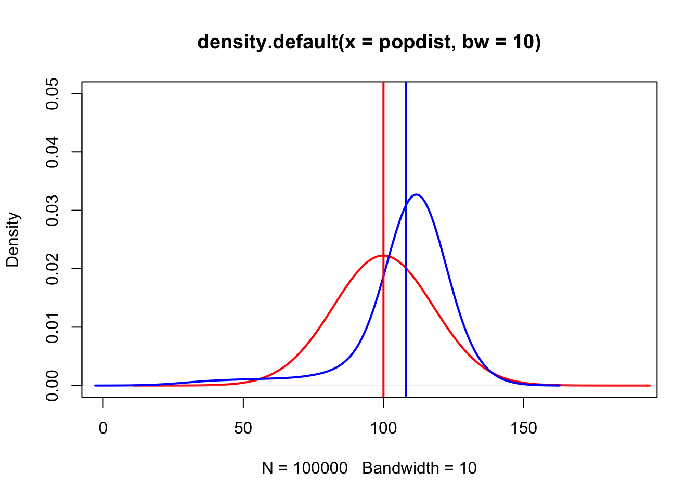
It looks like the two mean groups might be different but how can we formalize this? What if we just subtracted the population mean of intelligence scores from every sample value instead of doing all this guesswork with the plot?
data.minus.population.mean <- data-100 #population mean was 100 by definition.
hist(data.minus.population.mean) 
We can see in the histogram that there are a good range of values in the sample.
What was the implication of that subtraction though? We just made a new sample. We subtracted the population mean and NOW we have a sample of differences. What if we computed the mean of that sample….
mean(data.minus.population.mean)[1] 8.15How do we interpret this new mean? This new mean is the average distance away from 100 our sample data are.
How could we assess the quality of that mean? With its standard error.
standardized.mean.difference <- mean(data.minus.population.mean)/
(sd(data.minus.population.mean)/
sqrt(length(data.minus.population.mean)))
print(standardized.mean.difference)[1] 12.1493How? Recall that we’re talking about standard error of differences. If the sample was from the same population, then the mean difference should be 0.
AND, if the sample is not from the same population the standardized score will be very far away from 0 standardized distances.
We have observed that this score is about 11 standardized distances away from the population mean of 100. So, we turn to the t-distribution and see what percentage of times a score of 11 or greater is observed.
pt(standardized.mean.difference,df=499,lower.tail = F) [1] 3.097959e-30The pt() function returns the probability. If our standardized mean difference was LESS (i.e., negative) we’d use lower.tail= T. We interpret the p-value as ’the probability that there is NO difference between the mean of student sample scores and the population mean is less than .000000.
Admittedly this type of inference is backwards and unsatisfying in some regards. - We took some real data to do some computations. - Then from those computations we got a standardized mean difference score. - Then we said ‘how often is a score this extreme observed when we know our data come from the same population.’
The two distributions (i.e., the real data and the t-distribution) are still separate and they do not mix. But we have nevertheless used one distribution to talk about the other.
It’s a type of sleight of hand. The question we want to answer is not the question we are able to answer with this type of approach. For this reason, it is imperative that our studies be designed with extreme care. If they aren’t, the differences we find between models will not be due to the reasons we think.
Put differently, our t-test is only indicating merely how easily our data could have been generated by a random process while what we really want to know is simply how our data have been generated.
Confidence intervals are a slightly different method of doing the same type of inference shown above. In the inference above, we aimed to determine how frequently a value as extreme or greater than our observed standardized mean difference was seen in a distribution based on a true mean difference of 0. Rather than frame the inference in terms of the ‘no mean difference distribution (null distribution)’, confidence intervals are a method for constructing a range around our estimated mean difference which relates to the true population mean difference in another frequency based manner.
Specifically, we can defined a confidence interval estimation procedure. Then, using this procedure we can assess the procedure itself. When we do we’re saying that we’re able to construct an interval such that IF we were to construct the interval on an infinite series of experiments, in 95% of those experiments the true population mean difference would be found within the interval. By definition, this means that the the probability of any given confidence interval from any one of the experiments, doesn’t actually have a 95% of the population estimate being within it.
To make it compatible with the t-test above we simply apply some reasoning. We say ‘given that this true population mean difference is likely to be within our interval’, we determine whether or not our interval ALSO contains a value of 0. If 0 is not within the range, then it is not likely the case that the true population mean difference is 0.
Clear as mud? It might be. It relies on counterfactual thinking and that is not the typical method we use to think about the world. More on that later. For now, let’s demonstrate how confidence intervals work to clear up the confusion.
How do we determine HOW to construct a confidence interval?
First, recall above where I pointed out that it was ‘delightful’ that the standard deviation of a series of mean differences divided by their standard error is equal to 1. I said it was delightful because sd(standardized.differences) being equal to 1 shows us, again, that standard error is just another term for standard deviation of possible means.
AND, as I showed very early in the content above, the standard deviation of a set of standardized observations is 1 no matter what the original standard deviation. To refresh your mind
Second, we now have the t-distribution and we know how to define intervals along it such that we can determine what proportion of mean differences 95% of all observable mean differences when the true mean difference is 0. #Finally, recall that the sample mean is an unbiased and consistent estimator of the population mean and that standard deviation is also a type of mean (but it requires a small adjustment for its bias).
Putting all this together then, we can start by imagining that we have just 1 sample drawn from the t-distribution. Since we know that the sample mean is a good estimate of the population mean and the standard deviation is a good estimate of the population standard deviation, we can use those estimates to ‘reproduce’ our t-distribution. Lastly, since we’re reconstructing the t-distribution from our estimates, can also use the same 95% cutoff values as if we had access to the whole t-distribution.
Putting these together allows us to systematically construct a confidence interval.
NEXT, we test whether this approach to constructing the confidence interval results in estimates that are accurate according to the definition we laid out above.
That is, if we repeatedly draw samples and repeatedly construct confidence intervals, will 95% of those experiments contain the true population value within the confidence intervals?
The answer is yes. Let’s demonstrate it. We’ll run 10k experiments. Within each experiment we’ll construct a confidence interval. Then, for each experiment, we’ll determine whether or not the confidence interval contains 0. Again, we test for 0 because 0 is the ‘true population value’ for the t-distribution when we are saying that our ‘two means are the same’.
coverage.frequency <- sapply(1:10000,function(repetition){
n <- 100
a <- sample(population,size=n)
b <- sample(population,size=n) #We're comparing two samples here so we need to combine their standard deviations into a pooled estimate. IF population variances are equal you DON'T have to do this... But let's assume we don't know for the sake of precision and completeness.
sd.a <- sd(a)
sd.b <- sd(b)
pooled.sd <- sqrt(((sd.a^2)*(n-1)+(sd.b^2)*(n-1))/(n+n-2)) #same as previously above.
standard.error <- pooled.sd*sqrt((1/n)+(1/n))
#Next we compute the upper boundary of the confidence interval
upper <- (mean(a)-mean(b))+qt(.975,98)*standard.error
#And the lower boundary of the confidence interval
lower <- (mean(a)-mean(b))-qt(.975,98)*standard.error
#We create a condition for detecting if 0 is in the interval.
flag <- FALSE
#This is saying if the upper boundary is greater than 0 and the lower boundary is less than 0, then set flag to True to indicate that 0 is within the interval.
if(upper > 0 & lower<0){flag <- TRUE}
return(flag)})
#Lastly, we count our 'flags' from the experiments.
table(coverage.frequency) #Shows that approximately 95% of the experiments do contain the true population value.coverage.frequency
FALSE TRUE
482 9518 Above, we demonstrated that the confidence interval procedure works as intended.
So, how do we get from the distribution of these experiments back to our data? We convert in the same way as we did in the beginning of this document. That is, we would subtract the mean and divide by the standard deviation. Then we multiply by the standard deviation of the distribution we’re converting to and add in the mean of the new distribution.
We start with our standardized differences where we know the population value is 0.
#This is the same as previously shown above but it's included here for clarity.
standardized.differences <- sapply(1:10000,function(repetition){ n <- 500
a <- sample(population,size=n)
b <- sample(population,size=n)
sd.a <- sd(a)
sd.b <- sd(b)
pooled.sd <- sqrt(((sd.a^2)*(n-1)+(sd.b^2)*(n-1))/(n+n-2))
standard.error <- pooled.sd*sqrt((1/n)+(1/n))
return((mean(a)-mean(b))/standard.error)})
mean(standardized.differences) #We know is approximately 0. sd(standardized.differences) #We know is approximately 1.[1] 0.01672614standardized.differences <- standardized.differences-mean(standardized.differences)
standardized.differences <- standardized.differences/sd(standardized.differences) Now we have mean = 0 and sd = 1.
mean(standardized.differences) #Reminder: anything like -5.005435e-18 is due to floating point error. [1] -2.072231e-17sd(standardized.differences) [1] 1mean(data.minus.population.mean)/(sd(data.minus.population.mean)/sqrt(500)) [1] 12.1493standardized.differences <- standardized.differences*(sd(data.minus.population.mean)/sqrt(500))
standardized.differences <- standardized.differences+mean(data.minus.population.mean)
plot(density(standardized.differences)) 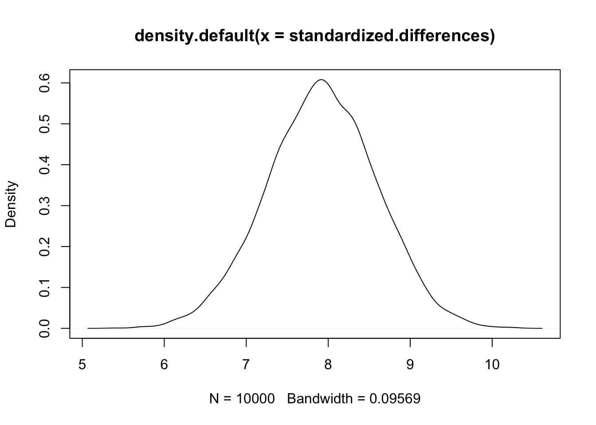
We have our distribution around the mean differences. Even though we did not run 10,000 experiments, since we know how distribution behaves based on 1 sample, we can use our 1 sample to generate this distribution as we did above.
sd(standardized.differences) #This is equal to the standard error. [1] 0.6708204qt(.975,df=498,lower.tail = T) #The cutoff value for the 95% threshold as before. =1.964739[1] 1.964739upperlimit.95confidenceinterval <- mean(standardized.differences)+1.964739*sd(standardized.differences)
lowerlimit.95confidenceinterval <- mean(standardized.differences)-1.964739*sd(standardized.differences)
table(standardized.differences<upperlimit.95confidenceinterval & standardized.differences>lowerlimit.95confidenceinterval) #Approximately 95%.
FALSE TRUE
491 9509 So, given this observation AND the observation that the true population value will be found within the confidence interval for 95% of experiments, we can finally test whether 0 is in the interval or not.
upperlimit.95confidenceinterval <0 & lowerlimit.95confidenceinterval>0 #Returns: FALSE. [1] FALSETherefore, 0 is not within the confidence interval and we conclude that the difference we have observed is not due to random sampling variability.
Does all this seem sufficiently confusing or what! Is there a simpler, more direct way? Yes, cross-validation.
The classical approach to inference using counterfactual thinking is quite confusing to learn. It has also been criticized by many for its fragility. For example, despite the name, the coverage of the 95% confidence intervals is not always the true coverage. Instead, the coverage rates depend on other underlying assumptions. In particular, the random sampling is really important because it determines how accurately the standard error will be computed.
With cross-validation, we aren’t working with a hypothetical reality. Instead, we simply estimate a model on one set of data. Then, we test that model on another set of data. The idea is that IF the model values are useful, then when the model is applied to the new data it will perform better than an alternative model. The alternative model can be any model but to be equivalent to the classical inference, we can define the alternative model so that it is equal to the model implied by the t-test. That is, we set it be a model implying no mean difference (also known as a null model or null hypothesis model). So, if we predicted all scores in our ‘data’ object by the mean of the population (i.e.,100), we could compare the overall error with the overall error when we compute a mean on a subset of the ‘data’ object and use it to predict the remaining subset of observations.
null.hypothesis.model <- mean((data-100)^2) #This is the data minus the mean of the population. Notice that this formula is equivalent to variance. This metric is most commonly referred to as Mean Squared Error in the context of prediction.
splits <- cut(1:length(data),breaks = 10,labels = F) #We'll make 10 different groups on which to test. 9 groups will be used to compute the mean, then the 10th will be used to evaluate. The process will be rotated so that each group is used for testing 1 time. You can use more groups if you'd like. For example, the version where each case is predicted by the mean of all other samples is called Leave-One-Out cross-validation. 10 groups, however, has been shown to have desirable properties.
data <- sample(data) #This will shuffle the data to ensure each test group has an approximately equal range of values and that each sample member has an equal probability of joining with other sample members in either the testing or model estimation sets..
MSE.estimates <- sapply(1:10,function(group){
sample.mean <- mean(data[-c(splits==group)]) #Says 'compute the mean for all members minus members who have been assigned the value indicated by group.
return(mean((data[splits==group]-sample.mean)^2))}) #Says, 'compute the Mean Squared Error but ONLY for the members of 'group'
#As a last step for cross-validation, we combine the group estimates by computing their mean.
alternative.hypothesis.model <- mean(MSE.estimates)
#To compare the two models, we compute 1 - their ratio, the result is an index of model fit called R-squared. There are at least 8 different commonly used formulas for R-squared. THIS, is one of the simplest and most preferred. (See: Kvalseth, T.O., 1985) Cautionary Note about R2.)
R.squared <- 1- alternative.hypothesis.model/null.hypothesis.model
print(R.squared)[1] 0.2282774plot(density(MSE.estimates)) 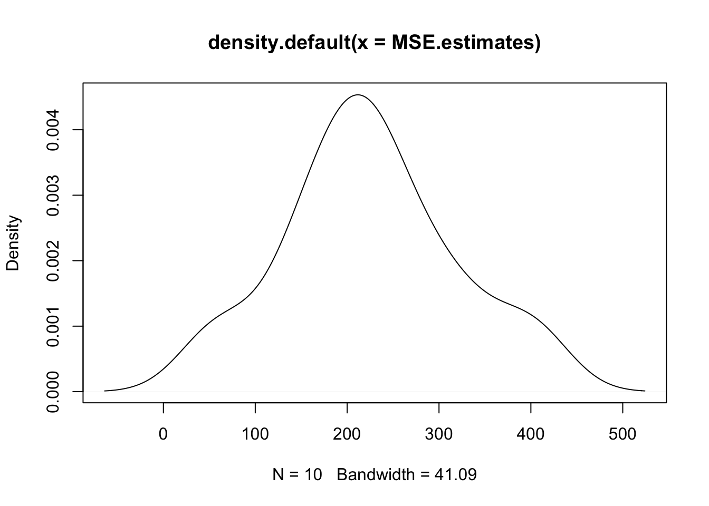
Finally, to interpret this version of R.squared we simply consider its meaning.
It is 1- a ratio. So, it is similar to a percentage.
However, if the alternative hypothesis model is considerably worse than the null hypothesis model, the R-squared value in this formulation can be negative. In general, it is useful to treat R-squared as a percentage and to think that R-squared refers to the percentage of variance one model accounts for relative to another.
Additionally, usually the null hypothesis concerns the idea that there is no difference or that an independent variable does not predict a dependent variable. In those cases, the null hypothesis model will have a Mean squared error that is equal to the variance of the dependent variable. The interpretation of R-squared in those cases is the amount of variance accounted by the alternative model. This leads to an important point: Picking a bad null hypothesis model will not allow you to know how good your alternative hypothesis model actually is.
Cross-validation seems like a much more straightforward way to evaluate hypotheses, right? No t-distributions or sleight-of-hand/counterfactual thinking. In fact, it directly resembles our basic intuitions and reasoning about the world. 1. Get an idea. 2. Test that idea. 3. Determine if the idea was good or not based on the result.
Soooooo where’s the problem? First of all, the properties of cross-validation are not as well understood as classical tools. AND we do know that it has some limitations. That’s not surprising though. All methods of inference have weaknesses.
The second issue is by splitting up the data, we lose some statistical power ( the estimator is biased, specifically pessimistically/negatively biased). If we have thousands of data points then it will not likely matter. But if we have small numbers of data points it could matter a lot. So, it matters which type of tool/test we use when we are making inferences because they don’t all behave the same under the same conditions.
That’s all for now. There will be more topics to come soon.
in no particular order…..
ANOVA. Analysis of Variance. Another method for approaching tests of mean differences between groups is with ANOVA. The basic idea of ANOVA is that IF two samples are drawn from the same population, THEN there will be more variance of within the respective samples than between them. This observation derives from the expectation that, on average, samples drawn from the same population will have the SAME mean and that there is variance among samples in ALL cases due to the population being a distribution.
F-statistic.An F-statistic is just a ratio made by taking the variances between the groups being compared and the variances within the groups. When variances between the groups is relatively larger than the variances within the groups, we can infer that the groups belong to different populations.
It is ALSO, the case that F-statistics are often discussed a ratio made by taking the variance accounted for (sometimes referred to as the variance ‘explained’) by a model and the remaining variance (most often referred to as the ‘residual’ variance). The F-test is more general than the t-test.
Statistical Power/Precision. (Type 1 vs Type 2 errors) Effect size estimates.
How convenience sampling affects sampling distributions -> the accuracy of standard error estimates -> and the coverage properties of confidence intervals.
Does cross-validation suffer the same limitations as t-tests when convenience sampling is used?
Relatedly, how does data splitting in cross-validation trade-off power? When you cross-valdiate, you lose some power, but it’s an empirical question as to how much you lose. At the same time, when the data do not perfectly conform to the required properties (see the examples near the end of sd vs md.R), power will suffer when not using cross-validation. So, if using cross-validation compensates for those issues, then it may result in a net gain of power in some cases.
Linear regression (including models as mapping functions rather than as lines) correlation (Pearson, Spearman)
Also, a bit on why linear models are not all inclusive for hypothesis testing.
We’ll also get to fun ML stuff. For example, we’ll use the basic skills built in this document to look at the sampling distributions of neural networks and decision trees.